ĐIỆN TÂM ĐỒ — 12 CHUYÊN ĐỀ LÂM SÀNG
14.1. Tăng áp lực nội sọ (sóng T não) – ECG
Tăng áp lực nội sọ, bệnh lý nội sọ và ECG
1.1. Tăng áp lực nội sọ
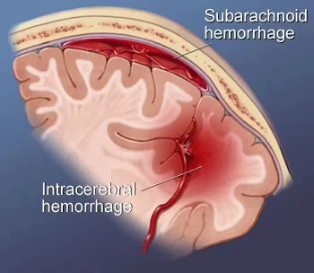
- Tăng áp lực nội sọ nặng (bất kể nguyên nhân nào)
- Kích thích vùng dưới đồi (hệ thần kinh tự chủ)
- Giải phóng catecholamine (adrenaline, noradrenaline)
- Các nguyên nhân thường gặp nhất:
- Xuất huyết dưới nhện (subarachnoid hemorrhage)
- Xuất huyết nội sọ (intracranial hemorrhage)
- Đột quỵ thiếu máu não (ischemic stroke)
- Chấn thương sọ não
- Di căn não
- U não
- Cơn bão catecholamine (catecholamine storm)
- Xảy ra khi có giải phóng ồ ạt catecholamine
- Là biểu hiện hoạt hoá cực độ của hệ thần kinh giao cảm
- Phản xạ Cushing (Cushing's reflex)
- Là đáp ứng sinh lý của hệ thần kinh trung ương với tăng áp lực nội sọ
- Biểu hiện bằng tam chứng:
- Nhịp chậm xoang (sinus bradycardia)
- Tăng huyết áp động mạch
- Kiểu thở không đều
1.2. Bệnh cơ tim do stress
- Catecholamine được giải phóng gắn vào cơ tim và thường gây ra:
- Rối loạn vận động cơ tim (bệnh cơ tim do stress – stress cardiomyopathy)
- Thay đổi trên ECG
- Các thể của bệnh cơ tim do stress gồm:
- Cơ tim choáng váng (stunned myocardium – neurogenic stunned myocardium)
- Bệnh cơ tim Takotsubo (Takotsubo cardiomyopathy)
- Cơ tim choáng váng (stunned myocardium – neurogenic stunned myocardium)
- Xảy ra khi có tăng áp lực nội sọ cấp tính
- Noradrenaline được giải phóng từ các tận cùng thần kinh, chủ yếu gây ra
- Rối loạn vận động của toàn bộ thất trái
- Thay đổi trên ECG
- Kéo dài khoảng 2 tuần
- Bệnh cơ tim Takotsubo (Takotsubo cardiomyopathy)
- Xảy ra khi có stress cực độ mà không có tăng áp lực nội sọ
- Xảy ra chủ yếu ở phụ nữ sau mãn kinh
- Adrenaline được giải phóng vào tuần hoàn chủ yếu gây ra
- Rối loạn vận động vùng mỏm tim
- Thay đổi trên ECG
- Kéo dài khoảng 4-6 tuần
1.3. ECG và tăng áp lực nội sọ
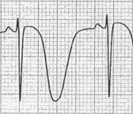
- Các thay đổi ECG chủ yếu liên quan tới tăng áp lực nội sọ gồm:
- Xuất huyết dưới nhện (SAH)
- 72% bệnh nhân SAH có thay đổi trên ECG
- Xuất huyết nội sọ (ICH)
- 57% bệnh nhân ICH có thay đổi trên ECG
- Xuất huyết dưới nhện (SAH)
- Các thay đổi ECG có thể tồn tại từ 2 đến 8 tuần
- Các thay đổi ECG chính liên quan tới tăng áp lực nội sọ:
- Sóng T não (cerebral T waves) (sóng T rộng và sâu)
- Khoảng QT kéo dài (prolonged QT interval)
- Nhịp chậm (bradycardia) do phản xạ Cushing
- Các thay đổi ECG thứ phát:
- ST chênh lên và ST chênh xuống
- Có thể giống nhồi máu cơ tim
- Tăng sóng U ( >1mm )
- ST chênh lên và ST chênh xuống
- Sóng T não
- Khoảng QT kéo dài
- Xuất huyết nội sọ có thể giống nhồi máu cơ tim cấp!
- Bệnh nhân không được dùng thuốc chống đông và thuốc tiêu sợi huyết để điều trị nhồi máu!
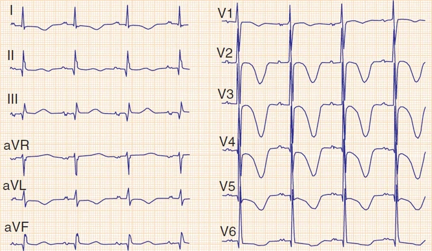
Xuất huyết dưới nhện
- Sóng T não (V2-V5)
- Khoảng QT kéo dài ở mức giới hạn (0,45s)
- Không có nhịp chậm
- Tần số tim 63/phút.
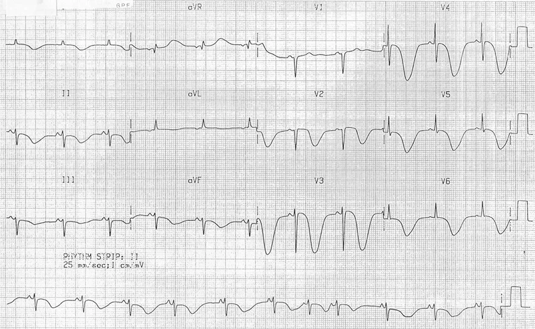
Xuất huyết dưới nhện
- Sóng T não (V2-V6, II)
- Khoảng QT kéo dài (0,6s)
- Không có nhịp chậm
- Tần số tim 60/phút.
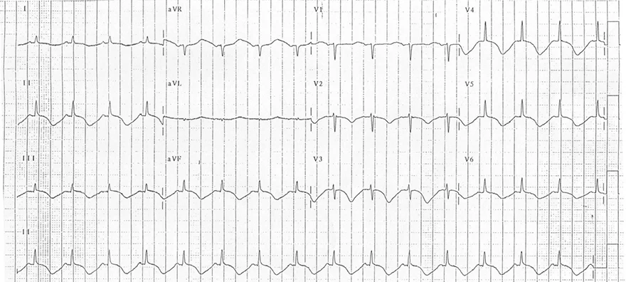
Xuất huyết dưới nhện
- Sóng T não (V3-V6, II, III, aVF)
- Khoảng QT kéo dài (0,5s)
- Không có nhịp chậm
- Tần số tim 95/phút.
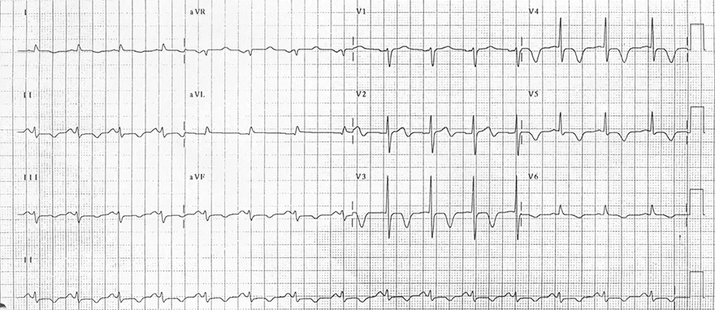
Xuất huyết dưới nhện
- Sóng T não (V3-V5)
- ST chênh xuống nhẹ (V3-V5, II)
- Khoảng QT kéo dài
- QT hiệu chỉnh (0,5s)
- QT dài hơn một nửa khoảng RR
- Các chẩn đoán có thể nghĩ tới trên ECG này gồm:
- Tăng áp lực nội sọ
- Biến đổi thiếu máu cục bộ
- Hội chứng Wellens
- Bệnh nhân có đau đầu, và CT sọ não cho thấy xuất huyết dưới nhện
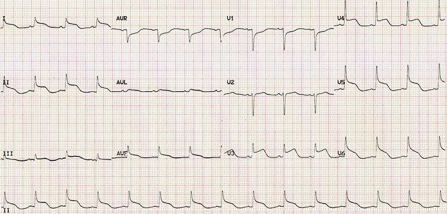
Chấn thương sọ não và cơn bão catecholamine
- ST chênh lên (V3-V6, II, aVF)
- Không có ST chênh xuống soi gương (trừ V1, aVR)
- Các chẩn đoán có thể nghĩ tới trên ECG:
- Tăng áp lực nội sọ
- Nhồi máu cơ tim ST chênh lên (STEMI)
- Viêm màng ngoài tim
- Đây là bệnh nhân 18 tuổi sau chấn thương sọ não
- Bệnh nhân có tăng áp lực nội sọ 30-40 mmHg (bình thường là 7-15 mmHg)
- Bệnh nhân được điều trị chống phù não, sau đó ECG trở về bình thường
14.2. Hạ thân nhiệt – ECG
Hạ thân nhiệt
2.1. Hạ thân nhiệt
- Hạ thân nhiệt (làm lạnh)
- Là tình trạng giảm thân nhiệt trung tâm < 35°C.
- Thân nhiệt trung tâm được coi là nhiệt độ của các tạng bên trong, chủ yếu là gan
- Chuyển hoá chậm lại trên toàn cơ thể
- Các pha riêng lẻ của điện thế hoạt động bị kéo dài
- Dẫn truyền qua hệ thống dẫn truyền chậm lại
2.2. ECG và hạ thân nhiệt
- Các đặc điểm chính của hạ thân nhiệt:
- Rối loạn nhịp chậm (tần số tim < 50/phút.)
- Nhịp chậm xoang (dấu hiệu thường gặp nhất)
- Rung nhĩ (với dẫn truyền chậm xuống thất)
- Nhịp bộ nối
- Block nhĩ thất độ I đến độ III
- Sóng Osborn (sóng J)
- Sóng hẹp, nhọn, xuất hiện ngay sau QRS
- Đôi khi chỉ thấy dưới dạng một "khấc" (notch) ở phần tận của QRS
- Điển hình xuất hiện ở ít nhất hai chuyển đạo trước tim liền kề (V1-V6)
- Rối loạn nhịp chậm (tần số tim < 50/phút.)
- Các đặc điểm thứ phát của hạ thân nhiệt:
- Kéo dài:
- Khoảng PQ
- Phức bộ QRS
- Khoảng QT
- Nhiễu do cử động (run)
- Bệnh nhân run vì lạnh, làm đường đẳng điện trên ECG bị rung
- Cơ tạo ra các xung điện yếu, chồng lên các xung điện của tim
- Ngoại tâm thu thất
- Xảy ra chủ yếu khi có nhịp chậm nặng và các khoảng ngừng xoang
- Rối loạn nhịp thất:
- Nhịp nhanh thất
- Rung thất (cho tới vô tâm thu)
- Kéo dài:
- Các đặc điểm ECG trong hạ thân nhiệt khác nhau ở từng bệnh nhân
2.3. Sóng Osborn và hạ thân nhiệt
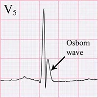
- Nguyên nhân thường gặp nhất của sóng Osborn (sóng J) là hạ thân nhiệt < 32°C
- Biên độ và bề rộng tăng lên khi hạ thân nhiệt nặng dần
- Sau khi điều chỉnh được tình trạng hạ thân nhiệt, sóng Osborn vẫn có thể tồn tại 12-24 giờ.
- Mỗi sóng Osborn là một yếu tố nguy cơ của nhịp nhanh thất (hội chứng Haïssaguerre – Le syndrome d'Haïssaguerre)
- Nhịp nhanh thất thường xảy ra nhất trong lúc làm ấm cơ thể ở mức 28-32°C
- Mức độ tương quan giữa sóng Osborn và hạ thân nhiệt khác nhau ở từng bệnh nhân
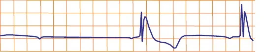
Hạ thân nhiệt (32°C)
- Sóng Osborn
- Biên độ và bề rộng sẽ giảm dần khi cơ thể được làm ấm
- Khoảng QT kéo dài
- Khoảng QT hiệu chỉnh (578ms)
- Nhịp chậm xoang
- Tần số tim < 50/phút.
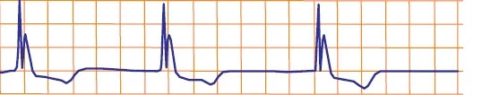
Hạ thân nhiệt (34°C)
- Sóng Osborn nhỏ hơn
- Khoảng QT kéo dài
- Khoảng QT hiệu chỉnh (504ms)
- Nhịp chậm xoang
- Tần số tim < 50/phút.
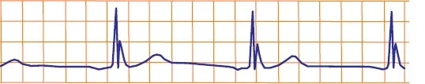
Hạ thân nhiệt (35°C)
- Sóng Osborn nhỏ hơn
- Khoảng QT kéo dài
- Khoảng QT hiệu chỉnh (506ms)
- Nhịp chậm xoang
- Tần số tim < 50/phút.
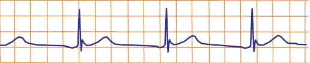
Hạ thân nhiệt (36°C)
- Sóng Osborn ở 36°C gần như đã biến mất
- Khoảng QT kéo dài ở mức giới hạn
- Khoảng QT hiệu chỉnh: (462ms)
- Không còn nhịp chậm
- Tần số tim 55/phút.
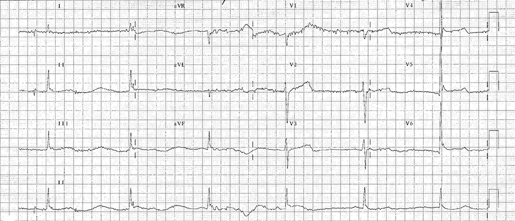
Hạ thân nhiệt (35°C)
- Các dấu hiệu ECG điển hình của hạ thân nhiệt
- Nhịp chậm xoang – nhĩ (30/phút.)
- Sóng Osborn (V4 - V6)
- Nhiễu do cử động (run) (thấy rõ nhất ở chuyển đạo V1)
- Khoảng QT kéo dài (0,6s)
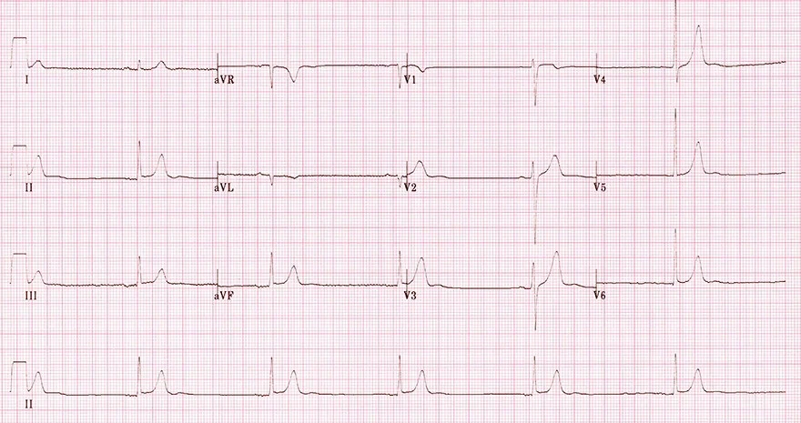
Hạ thân nhiệt (36°C)
- Nhịp chậm xoang – nhĩ (30/phút.)
- Không có sóng Osborn và không có nhiễu do run
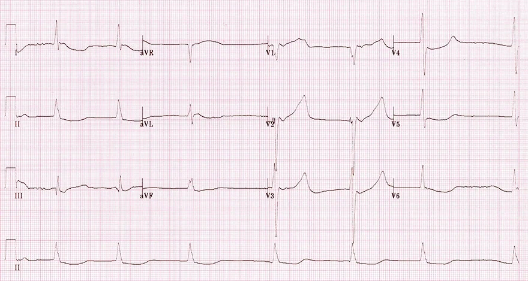
Hạ thân nhiệt (34°C)
- Rung nhĩ
- Với dẫn truyền xuống thất chậm (40/phút.)
- Khoảng QT kéo dài (0,75s)
- Không có sóng Osborn và không có nhiễu do run
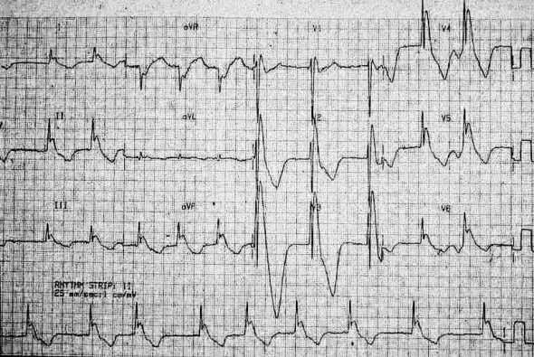
Hạ thân nhiệt (27°C)
- Sóng Osborn rất lớn (V2-6, I, II, III, aVF)
- Rung nhĩ
- Khoảng QT kéo dài (0,6s)
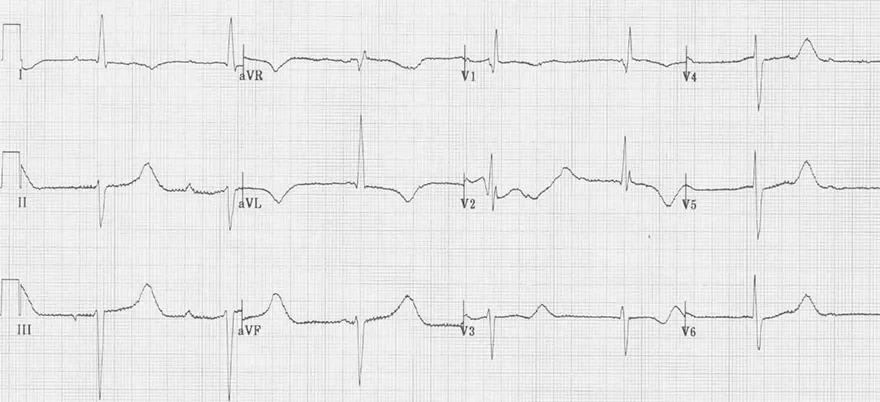
Hạ thân nhiệt (33°C)
- Nhịp chậm xoang – nhĩ (tần số: 45/phút.)
- Khoảng QT kéo dài (0,72s)
- Có lẽ là block nhĩ thất độ II (Wenckebach)
- Khoảng PQ kéo dài (chuyển đạo III)
- ECG không có chuyển đạo II ghi liên tục,
vốn giúp xác định block nhĩ thất tốt hơn
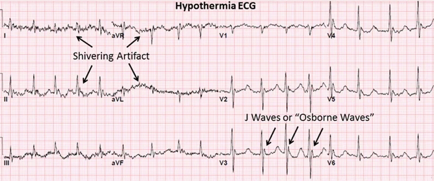
Hạ thân nhiệt khởi phát nhanh (31°C)
- Nhịp nhanh xoang
- Tần số > 100/phút.
- Ở giai đoạn khởi đầu của hạ thân nhiệt có nhịp nhanh; nhịp chậm xuất hiện muộn hơn
- Do đó trên ECG này chưa có nhịp chậm
- Sóng Osborn (V2-6)
- Khoảng QT kéo dài (0,5s)
- Nhiễu do tư thế (run)
- Các cơ run vì lạnh tạo ra xung điện làm che lấp xung điện của tim
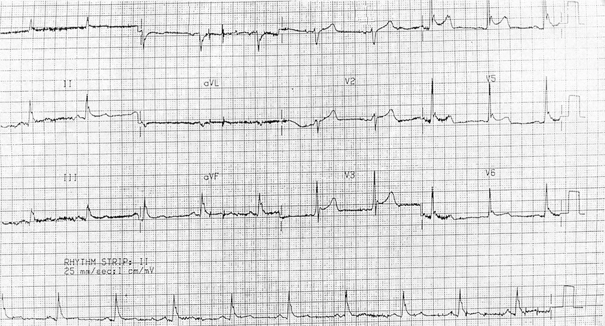
Hạ thân nhiệt (30°C)
- Nhiễu do tư thế (run) (I, II, III)
- Sóng Osborn (V3-V6)
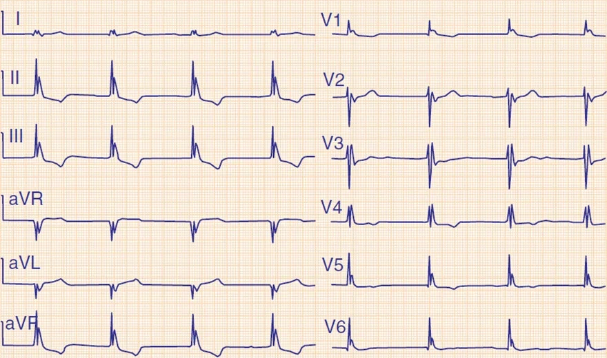
Hạ thân nhiệt (32°C)
- Nhịp chậm xoang (49/phút.)
- Block nhĩ thất độ I (khoảng PQ kéo dài 0,36s)
- Sóng Osborn (ở tất cả các chuyển đạo)
- Bệnh nhân hạ thân nhiệt khi tới bệnh viện, và thân nhiệt bắt đầu tăng dần:
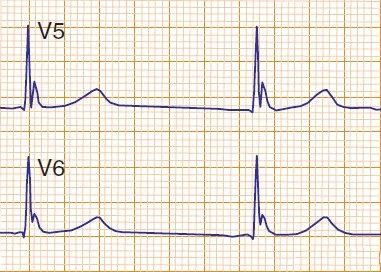
Hạ thân nhiệt (35°C)
- Sóng Osborn nhỏ hơn
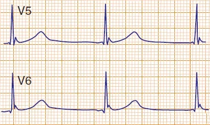
Hạ thân nhiệt (36°C)
- Sóng Osborn gần như đã biến mất
14.3. Viêm màng ngoài tim – ECG
Viêm màng ngoài tim
3.1. Màng ngoài tim và viêm màng ngoài tim
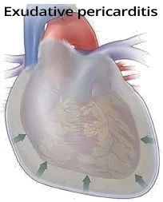
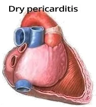
- Màng ngoài tim (pericardium) là màng bao bọc quả tim
- Chứa khoảng 50ml dịch thanh mạc
- Lớp dịch này cho phép màng ngoài tim và thượng tâm mạc trượt lên nhau
- Viêm màng ngoài tim là tình trạng viêm của màng ngoài tim, có hai thể:
- Viêm màng ngoài tim thể xuất tiết (exudative pericarditis)
- Dịch tích tụ trong khoang màng ngoài tim do viêm, quả tim "trôi nổi" trong dịch
- Tràn dịch cấp tính
- Dịch "ép" vào tim, và tim mất chức năng bơm
- Chèn ép tim (tamponade) có thể xảy ra chỉ với 200ml dịch
- Tràn dịch mạn tính
- Dịch tích tụ chậm, màng ngoài tim giãn dần
- Có thể chứa tới 1000ml dịch mà không gây chèn ép tim
- Viêm màng ngoài tim thể khô (dry pericarditis)
- Màng ngoài tim xơ hoá và cứng lại do viêm
- Có thể tiến triển thành viêm màng ngoài tim co thắt, khi đó màng ngoài tim "bóp nghẹt" quả tim
- Viêm màng ngoài tim thể xuất tiết (exudative pericarditis)
- 90% các trường hợp viêm màng ngoài tim cấp có biến đổi trên ECG
3.2. ECG và viêm màng ngoài tim cấp
- Viêm màng ngoài tim cấp có các dấu hiệu ECG sau trong 2 tuần đầu:
- ST chênh lên dạng lõm và PQ chênh xuống (ở tất cả các chuyển đạo trừ aVR và V1)
- ST chênh lên thường gặp nhất là 1mm (tối đa tới 5mm)
- ST chênh xuống và PQ chênh lên (aVR và V1)
- ST chênh lên dạng lõm và PQ chênh xuống (ở tất cả các chuyển đạo trừ aVR và V1)
- Các dấu hiệu ECG bổ sung
- Dấu hiệu Spodick (đoạn T-P đi xuống)
- Giảm biên độ QRS (dịch đóng vai trò cách điện)
- So le QRS – QRS alternans (biên độ các phức bộ QRS thay đổi theo từng nhát bóp)
- Trong viêm màng ngoài tim thể xuất tiết, quả tim "trôi nổi" trong dịch và trục điện tim thay đổi
- Nhịp nhanh xoang
- Với chèn ép tim, tam chứng đặc trưng là:
- So le QRS
- Nhịp nhanh xoang
- Điện thế QRS thấp
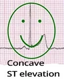
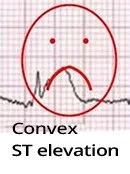
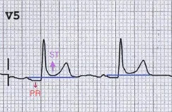
ST chênh lên và PQ chênh xuống
- Ở tất cả các chuyển đạo
- Trừ aVR và V1
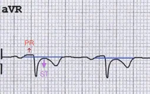
ST chênh xuống và PQ chênh lên
- Chỉ ở aVR và V1
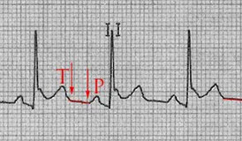
Dấu hiệu Spodick
- Đoạn T-P đi xuống
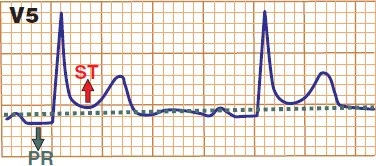
ST chênh lên và PQ chênh xuống
- Ở tất cả các chuyển đạo
- Trừ aVR và V1
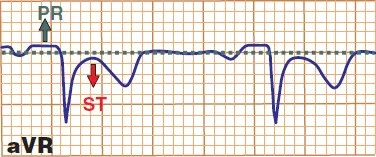
ST chênh xuống và PQ chênh lên
- Chỉ ở aVR và V1
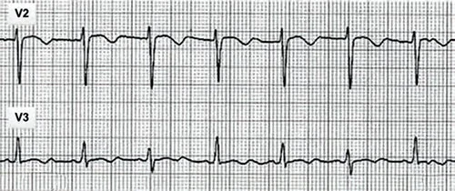
Viêm màng ngoài tim và so le QRS
- Trong viêm màng ngoài tim thể xuất tiết, quả tim "trôi nổi" trong dịch
- Điều này làm trục điện tim dịch chuyển lặp đi lặp lại trong thì tâm thu
- Hệ quả là chiều cao các phức bộ QRS thay đổi (so le QRS)
3.3. Các giai đoạn ECG của viêm màng ngoài tim
- Viêm màng ngoài tim điển hình có 4 giai đoạn ECG
- Khoảng 50% bệnh nhân viêm màng ngoài tim có diễn tiến điển hình
3.4. Giai đoạn 1 (2 tuần đầu)
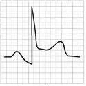
- ST chênh lên dạng lõm và PQ chênh xuống
(ở tất cả các chuyển đạo trừ aVR và V1)- ST chênh lên thường gặp nhất là 1mm
(tối đa tới 5mm)
- ST chênh lên thường gặp nhất là 1mm
- ST chênh xuống và PQ chênh lên (aVR và V1)
3.5. Giai đoạn 2 (tuần 1-3)
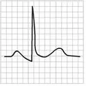
- ST chênh lên trở về bình thường
- Sóng T dẹt cho tới âm
3.6. Giai đoạn 3 (từ tuần thứ 3 trở đi)
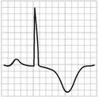
- Sóng T âm
- Đoạn ST và PQ đã trở về bình thường
3.7. Giai đoạn 4 (từ tuần thứ 4 trở đi)
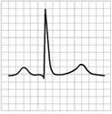
- ECG trở về bình thường
- Đôi khi ECG chỉ trở về bình thường sau tới 3 tháng
3.8. Viêm màng ngoài tim và nhồi máu cơ tim ST chênh lên (STEMI)
- ST chênh lên dạng lõm, trông như đang "mỉm cười" :-)
- Viêm màng ngoài tim luôn có ST chênh lên dạng lõm (trừ aVR, V1)
- ST chênh lên không tương ứng với vùng tưới máu của một động mạch đơn lẻ như trong STEMI
- STEMI có ST chênh lên dạng lồi
- Rất hiếm khi dạng lõm
- Viêm màng ngoài tim luôn có ST chênh lên dạng lõm (trừ aVR, V1)
- ST chênh lên (II, III)
- Viêm màng ngoài tim có ST chênh lên II > III
- STEMI có thể có hoặc không có ST chênh lên II > III
- ST chênh xuống soi gương
- Viêm màng ngoài tim chỉ có ST chênh xuống ở (aVR, V1)
- STEMI hầu như luôn có ST chênh xuống soi gương (đối diện với vùng ST chênh lên)
- Sóng Q bệnh lý
- Viêm màng ngoài tim không có sóng Q bệnh lý
- Sóng Q bệnh lý hầu như luôn xuất hiện trong STEMI
3.9. Lưu đồ: viêm màng ngoài tim hay STEMI
- Có ST chênh xuống ở các chuyển đạo khác ngoài (aVR và V1) không?
- Có (bệnh nhân bị STEMI)
- ST chênh lên nằm ngang hay dạng lồi không?
- Có (bệnh nhân bị STEMI)
- ST chênh lên ở III > II không?
- Có (bệnh nhân bị STEMI)
- Không có dấu hiệu nào ở trên. Có PQ chênh xuống ở nhiều chuyển đạo ngoài (aVR và V1) không?
- Có (bệnh nhân bị viêm màng ngoài tim)
3.10. Viêm màng ngoài tim và tái cực sớm lành tính
- Tái cực sớm lành tính (benign early repolarization – BER) và viêm màng ngoài tim đều có ST chênh lên dạng lõm
- BER được coi là biến thể bình thường, gặp chủ yếu ở người trẻ dưới 50 tuổi
- Vẫn còn tranh luận về việc tăng nguy cơ rối loạn nhịp thất
Viêm màng ngoài tim
- ST chênh lên ở tất cả các chuyển đạo (trừ aVR, V1)
- PQ chênh xuống ở tất cả các chuyển đạo (trừ aVR, V1)
- Tỉ lệ ST/T (V6) > 0,25
- Không có "móc câu" (fishhook) ở V4
- Biên độ sóng T bình thường
- Các biến đổi ECG mất dần (khoảng trong vòng 4 tuần)
Tái cực sớm lành tính
- ST chênh lên ở các chuyển đạo trước tim (V2-V6)
- Không có PQ chênh xuống
- Tỉ lệ ST/T (V6) < 0,25
- Có "móc câu" (fishhook) ở V4
- Biên độ sóng T cao (sóng T đối xứng)
- Các biến đổi ECG tồn tại nhiều năm (không mất đi trong vòng 4 tuần)
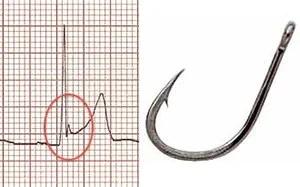
Hình móc câu (fishhook pattern)
- Sóng J và ST chênh lên dạng lõm tạo hình giống một chiếc móc câu
- Thấy rõ nhất ở V4
- Hầu như luôn có trong tái cực sớm lành tính
- Viêm màng ngoài tim không có hình móc câu này
3.11. Tỉ lệ ST/T (V6)
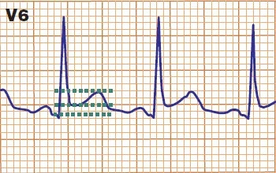
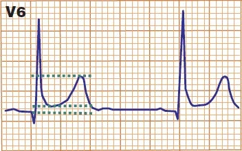
- Tỉ lệ đoạn ST / sóng T (V6) giúp phân biệt viêm màng ngoài tim với tái cực sớm lành tính
- ST chênh lên được đo từ đoạn PQ (V6)
- Biên độ sóng T được đo từ đoạn PQ (V6)
- Tỉ lệ (ST/T) > 0,25: viêm màng ngoài tim
- Tỉ lệ (ST/T) < 0,25: tái cực sớm lành tính
Viêm màng ngoài tim
- ST chênh lên = 1,5mm
- Sóng T = 3,5mm
- ST/T = 0,43
- ST/T > 0,25 (viêm màng ngoài tim)
Tái cực sớm lành tính
- ST chênh lên = 1mm
- Sóng T = 6mm
- ST/T = 0,16
- ST/T < 0,25 (tái cực sớm lành tính)
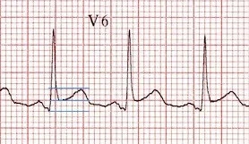
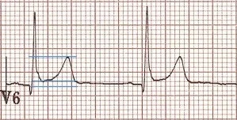
Viêm màng ngoài tim
- ST chênh lên = 2mm
- Sóng T = 4mm
- ST/T = 0,5
- ST/T > 0,25 (viêm màng ngoài tim)
Tái cực sớm lành tính
- ST chênh lên = 1mm
- Sóng T = 6mm
- ST/T = 0,16
- ST/T < 0,25 (tái cực sớm lành tính)
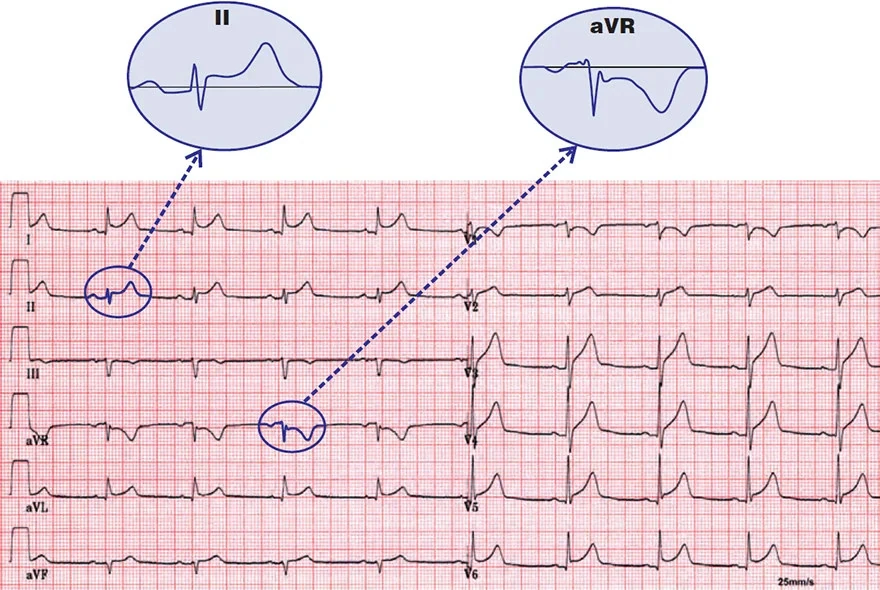
Viêm màng ngoài tim cấp
- ST chênh lên dạng lõm và PQ chênh xuống ở tất cả các chuyển đạo trừ (aVR và V1)
- Không có hình móc câu ở các chuyển đạo trước tim
- ST chênh xuống và PQ chênh lên (aVR và V1)
- Dấu hiệu Spodick
- Đoạn TP đi xuống (V3-5)
- Bệnh nhân bị viêm màng ngoài tim (giai đoạn 1)
Tái cực sớm lành tính
- ST chênh lên dạng lõm ở các chuyển đạo trước tim (V1-V6)
- Viêm màng ngoài tim có ST chênh lên ở tất cả các chuyển đạo trừ (aVR, V1)
- ST chênh xuống và PQ chênh lên rời rạc chỉ ở (aVR), không có ở V1
- Điều này không ủng hộ viêm màng ngoài tim
- Hình móc câu (V3, V4, III)
- Viêm màng ngoài tim không có móc câu này
- ST/T = 0,16
- Điều này gợi ý tái cực sớm lành tính
- Bệnh nhân bị tái cực sớm lành tính
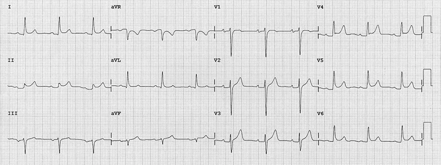
Viêm màng ngoài tim cấp
- ST chênh lên dạng lõm và PQ chênh xuống ở tất cả các chuyển đạo trừ (aVR)
- Viêm màng ngoài tim lẽ ra phải có ST chênh xuống và PQ chênh lên ở (aVR, V1)
- Không có hình móc câu ở các chuyển đạo trước tim
- ST/T = 0,33
- Điều này gợi ý viêm màng ngoài tim
- Bệnh nhân bị viêm màng ngoài tim (giai đoạn 1)
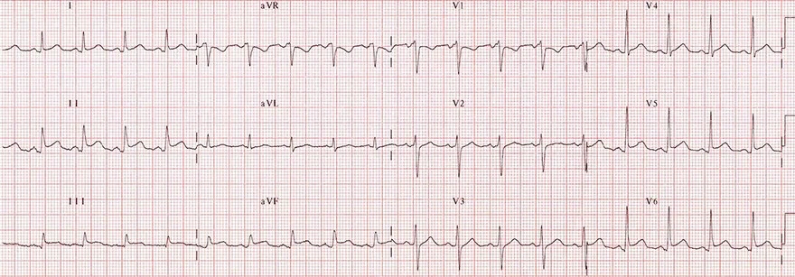
Viêm màng ngoài tim cấp
- Nhịp nhanh xoang
- Tần số: 110/phút.
- ST chênh lên dạng lõm và PQ chênh xuống ở tất cả các chuyển đạo trừ (aVR và V1)
- Không có hình móc câu
- Bệnh nhân bị viêm màng ngoài tim (giai đoạn 1)
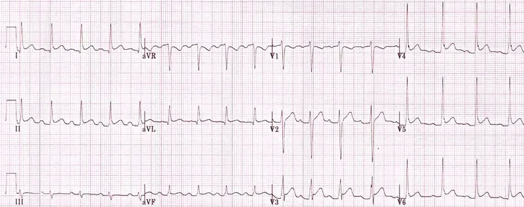
Viêm màng ngoài tim cấp
- Nhịp nhanh xoang
- Tần số tim: 110/phút.
- ST chênh lên dạng lõm và PQ chênh xuống ở tất cả các chuyển đạo trừ (aVR và V1)
- Thoáng có hình móc câu (V4)
- Tuy nhiên các dấu hiệu khác của tái cực sớm lành tính thì không có
- ST/T = 0,33
- Điều này gợi ý viêm màng ngoài tim
- Dấu hiệu Spodick
- Đoạn TP đi xuống (V4)
- Bệnh nhân bị viêm màng ngoài tim (giai đoạn 1)
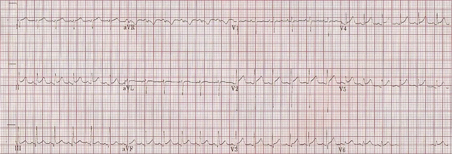
Viêm cơ tim – màng ngoài tim cấp
- ST chênh lên dạng lõm và PQ chênh xuống ở tất cả các chuyển đạo trừ (aVR)
- Viêm màng ngoài tim lẽ ra phải có ST chênh xuống và PQ chênh lên ở (aVR, V1)
- Không có hình móc câu
- ST/T = 0,33
- Điều này gợi ý viêm màng ngoài tim
- Bệnh nhân là trẻ 6 tuổi có nhịp nhanh xoang
- Men tim tăng nhẹ (troponin, CK, CK-MB).
- Bệnh nhân bị viêm cơ tim – màng ngoài tim (viêm màng ngoài tim ở giai đoạn 1)
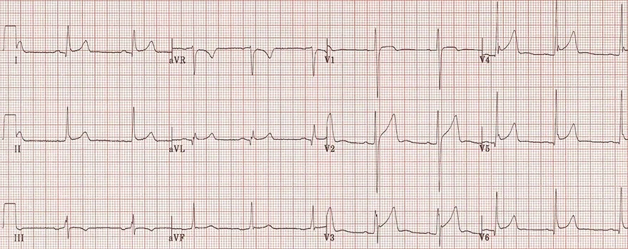
Viêm cơ tim – màng ngoài tim cấp
- ST chênh lên dạng lõm và PQ chênh xuống ở tất cả các chuyển đạo trừ (aVR)
- Viêm màng ngoài tim lẽ ra phải có ST chênh xuống và PQ chênh lên ở (aVR, V1)
- Không có hình móc câu
- ST/T = 0,33
- Điều này gợi ý viêm màng ngoài tim
- Bệnh nhân là trẻ 6 tuổi có nhịp nhanh xoang
- Men tim tăng nhẹ (troponin, CK, CK-MB).
- Bệnh nhân bị viêm cơ tim – màng ngoài tim (viêm màng ngoài tim ở giai đoạn 1)
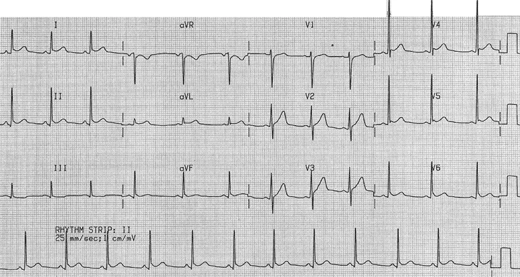
Tái cực sớm lành tính
- Nam 23 tuổi đi khám sức khoẻ định kỳ
- ST chênh lên dạng lõm ở các chuyển đạo trước tim (V2-V6)
- ST chênh lên ở mức giới hạn tại các chuyển đạo (I, II)
- Tái cực sớm lành tính (BSR) chủ yếu biểu hiện bằng ST chênh lên dạng lõm ở các chuyển đạo trước tim
- Hình móc câu (V4-5) (gợi ý BSR)
- Viêm màng ngoài tim hầu như không bao giờ có hình móc câu này
- ST/T = 0,5 (gợi ý viêm màng ngoài tim)
- Dấu hiệu Spodick (gợi ý viêm màng ngoài tim)
- Đoạn TP đi xuống (V5-6)
- Các dấu hiệu ECG không đủ để khẳng định là viêm màng ngoài tim hay BSR
- Tuy nhiên bệnh nhân là nam trẻ (23 tuổi) không có bất kỳ triệu chứng chủ quan nào (khó thở, vã mồ hôi, mệt, hồi hộp...)
- Siêu âm tim và men tim (troponin, CK, CK-MB) đều bình thường
- Bệnh nhân bị tái cực sớm lành tính (BSR)
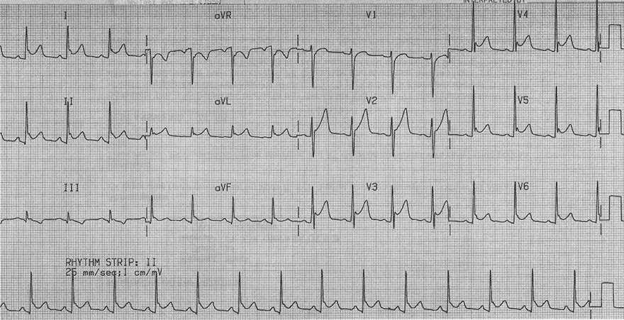
Tái cực sớm lành tính + viêm màng ngoài tim
- Hãy xem kỹ lại ECG trước đó (đây chính là bệnh nhân 23 tuổi đó)
- Bệnh nhân than phiền khó thở, vã mồ hôi và mệt toàn thân
- Bệnh nhân có BSR nay xuất hiện thêm viêm màng ngoài tim
- Có xu hướng nhịp nhanh xoang (tần số: 95/phút.)
- Điều mà một nam 23 tuổi không nên có khi nghỉ ngơi
- Đặc trưng của BSR là ST chênh lên dạng lõm biến mất khi tần số tim tăng
- Tuy nhiên ở đây ST chênh lên dạng lõm lại tăng lên (I, II, aVL, aVF, V2-V6)
- PQ chênh xuống sâu hơn (I, II) và đặc biệt (V2-V6)
- PQ chênh lên và ST chênh xuống rõ hơn (aVR và V1)
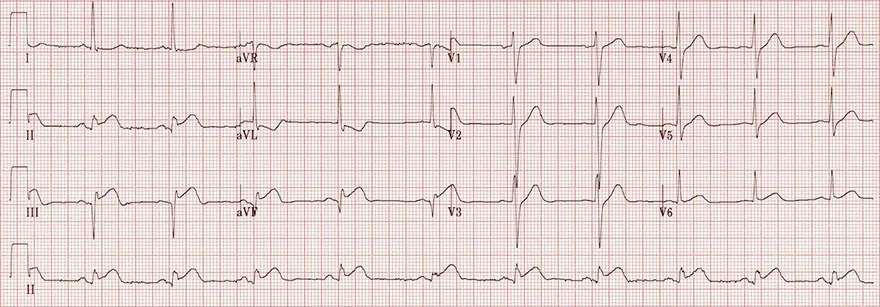
Nhồi máu cơ tim STEMI thành dưới cấp
- Đoạn ST dạng lõm (V1-6), không có ST chênh lên, không có PQ chênh xuống
- Điều này loại trừ cả viêm màng ngoài tim lẫn BSR
- Nhồi máu cơ tim thành dưới cấp (STEMI)
- ST chênh lên (II, III, aVF) và ST chênh xuống soi gương (aVL)
- Sóng Q bệnh lý (III, aVF)
- Không bao giờ gặp trong viêm màng ngoài tim hay BSR
- Trừ khi đó là STEMI cũ và bệnh nhân nay có thêm viêm màng ngoài tim
- Không bao giờ gặp trong viêm màng ngoài tim hay BSR
- Bệnh nhân vã mồ hôi và có cơn đau thắt ngực (đau ngực)
- Lưu đồ phân biệt viêm màng ngoài tim và STEMI:
- Có ST chênh xuống ở các chuyển đạo khác ngoài (aVR và V1) không?
- Có (aVL) (bệnh nhân bị STEMI)
- Có ST chênh xuống ở các chuyển đạo khác ngoài (aVR và V1) không?
Nhồi máu cơ tim STEMI trước – bên cấp
- ST chênh lên (V2-V6, I, aVL)
- Không có PQ chênh xuống
- ST chênh xuống soi gương (III, aVF)
- Viêm màng ngoài tim không gây ra dấu hiệu này
- Bệnh nhân bị nhồi máu cơ tim STEMI trước – bên cấp
- Thấy các ST chênh lên điển hình (V2-4) của STEMI cấp (sóng Pardee)
- Về chủ quan bệnh nhân có cơn đau thắt ngực, khó thở và vã mồ hôi
- Viêm màng ngoài tim có ST chênh lên dạng lõm ở tất cả các chuyển đạo (trừ aVR, V1)
- Các ST chênh lên có cùng độ cao
- Trên ECG này, ST chênh lên trội hơn ở V2-4
- Lưu đồ phân biệt viêm màng ngoài tim và STEMI:
- Có ST chênh xuống ở các chuyển đạo khác ngoài (aVR và V1) không?
- Có (III, aVF) (bệnh nhân bị STEMI)
- Có ST chênh xuống ở các chuyển đạo khác ngoài (aVR và V1) không?
14.4. Tái cực sớm lành tính (BER) – ECG
Tái cực sớm lành tính, điểm J chênh lên
4.1. Điện thế hoạt động và tái cực
- Điện thế hoạt động
- Lan trong thành cơ tim từ nội tâm mạc ra thượng tâm mạc
- Đường cong điện thế hoạt động có hình dạng khác nhau ở nội tâm mạc và thượng tâm mạc
- Do đặc tính khác nhau của các kênh ion
- Khử cực thất (pha 0)
- Tạo ra phức bộ QRS trên ECG
- Tái cực thất (pha 1)
- Bắt đầu trên ECG dưới dạng đoạn ST
- Pha 1 là khởi đầu của quá trình tái cực
- Thường được gọi là tái cực sớm (early repolarization)
4.2. Tái cực sớm lành tính
- Đây là rối loạn kênh ion lành tính ở thượng tâm mạc
- Xảy ra trong giai đoạn tái cực sớm (pha 1)
- Trên ECG biểu hiện bằng
- ST chênh lên dạng lõm
- Đoạn ST chênh lên cao hơn
- Khấc (sóng J)
- Tỉ lệ hiện mắc khoảng 5% dân số
- Được coi là biến thể của bình thường
- Chưa chắc chắn liệu tái cực sớm lành tính (BER) có phải là yếu tố nguy cơ của rung thất và đột tử do tim hay không
- Điển hình gặp ở người trẻ dưới 50 tuổi, đặc biệt là:
- Vận động viên và người Mỹ gốc Phi
4.3. ECG và tái cực sớm lành tính
- Điểm J chênh lên ở ít nhất 2 chuyển đạo liền kề
- Thường gặp nhất ở các chuyển đạo trước tim (V2-6)
- Điểm J là nơi nối giữa QRS và đoạn ST
- Sóng J ở các chuyển đạo trước tim
- Ở cuối phức bộ QRS có sóng J
- ST chênh lên dạng lõm trên toàn bộ quả tim, nhưng chủ yếu ở các chuyển đạo trước tim (V2-V6)
- Thường gặp nhất là tới 2mm ở các chuyển đạo trước tim, và tới 0,5mm ở các chuyển đạo chi
- Độ lớn phụ thuộc vào tần số tim
- Tăng lên khi có nhịp chậm
- Biến mất khi có nhịp nhanh
- Sóng T cao, nhọn trên toàn bộ quả tim, nhưng chủ yếu ở các chuyển đạo trước tim (V2-V6)
- Tỉ lệ ST/T (V6) < 0,25
- Có thể có ST chênh xuống (aVR)
- Tái cực sớm lành tính (BER) không gặp ở bệnh nhân trên 50 tuổi
4.4. Điểm J và ST chênh lên dạng lõm
- Điểm J và ST chênh lên dạng lõm
("mỉm cười")- Là chìa khoá để chẩn đoán tái cực sớm lành tính (BER)
- Điểm J là nơi nối giữa QRS và đoạn ST
- Trong trường hợp có sóng J và phức bộ QRS đi xuống thoai thoải, vị trí của điểm J còn gây tranh cãi
4.5. Các biến thể của tái cực sớm lành tính
Các biến thể BER thường gặp nhất
Các biến thể BER rất hiếm gặp
- BER có thể có 4 biến thể sau
- Điển hình thấy ở 2 chuyển đạo liền kề, thường gặp nhất ở các chuyển đạo trước tim (V2-6)
- Hai biến thể đầu là thường gặp nhất
- Hai biến thể sau, không có ST chênh lên, là rất hiếm
Hình móc câu (fish hook pattern)
- Sóng J và ST chênh lên dạng lõm trông giống một chiếc móc câu
- Thấy rõ nhất ở V4
- Hầu như luôn có trong tái cực sớm lành tính
- Viêm màng ngoài tim không có hình này
4.6. Tái cực sớm lành tính và viêm màng ngoài tim
- Tái cực sớm lành tính (BSR) và viêm màng ngoài tim đều biểu hiện bằng ST chênh lên dạng lõm
- Chẩn đoán phân biệt dựa vào các dấu hiệu ECG bổ sung
Viêm màng ngoài tim
- ST chênh lên ở tất cả các chuyển đạo (trừ aVR, V1)
- PQ chênh xuống ở tất cả các chuyển đạo (trừ aVR, V1)
- Tỉ lệ ST/T (V6) > 0,25
- Không có hình móc câu (V4)
- Biên độ sóng T bình thường
- Các biến đổi ECG mất dần (khoảng trong vòng 4 tuần)
Tái cực sớm lành tính
- ST chênh lên ở các chuyển đạo trước tim (V2-V6)
- Không có PQ chênh xuống
- Tỉ lệ ST/T (V6) < 0,25
- Có hình móc câu (V4)
- Sóng T biên độ cao (sóng T đối xứng)
- Các biến đổi ECG tồn tại nhiều năm (không mất đi trong vòng 4 tuần)
4.7. Tỉ lệ ST/T (V6)
- Tỉ lệ đoạn ST / sóng T (V6) giúp phân biệt viêm màng ngoài tim với tái cực sớm lành tính
- ST chênh lên được đo từ đoạn PQ (V6)
- Biên độ sóng T được đo từ đoạn PQ (V6)
- ST/T > 0,25: viêm màng ngoài tim
- ST/T < 0,25: tái cực sớm lành tính
Viêm màng ngoài tim
- ST chênh lên = 1,5mm
- Sóng T = 3,5mm
- ST/T = 0,43
- ST/T > 0,25 (viêm màng ngoài tim)
Tái cực sớm lành tính
- ST chênh lên = 1mm
- Sóng T = 6mm
- ST/T = 0,16
- ST/T < 0,25 (tái cực sớm lành tính)
4.8. Tái cực sớm vùng dưới – bên
- Tái cực sớm lành tính
- Được coi là chẩn đoán lành tính (biến thể của bình thường)
- Nếu các biến đổi chỉ thấy ở các chuyển đạo trước tim (V2-V6)
- Tái cực sớm vùng dưới – bên (inferolateral early repolarization)
- Điển hình có một khấc ở cuối phức bộ QRS, thấy ở ít nhất hai chuyển đạo:
- Các chuyển đạo dưới (II, III, aVF)
- Các chuyển đạo bên (I, aVL, V4-6)
- Theo một số nghiên cứu, thể này có nguy cơ tiềm tàng tăng lên đối với:
- Rung thất
- Đột tử do tim
- Điển hình có một khấc ở cuối phức bộ QRS, thấy ở ít nhất hai chuyển đạo:
4.9. Rối loạn nhịp thất ác tính
- Nguy cơ rối loạn nhịp ác tính trong tái cực sớm có thực sự đáng ngờ không?
- Một số nghiên cứu phân loại tái cực sớm theo nguy cơ rối loạn nhịp thất ác tính thành:
- Tái cực sớm lành tính vùng trước tim
- Là thể thường gặp nhất và được coi là biến thể của bình thường
- Biến đổi ECG ở (V2-6)
- Tái cực sớm vùng dưới – bên
- Rất hiếm
- Được báo cáo là có nguy cơ tăng rối loạn nhịp ác tính
- Biến đổi ECG ở các chuyển đạo dưới (II, III, aVF), hoặc các chuyển đạo bên (I, aVL, V4-6), hoặc ở cả hai vùng
- Tái cực sớm lan toả (global early repolarization)
- Rất hiếm
- Được báo cáo là có nguy cơ tăng rối loạn nhịp ác tính
- Biến đổi ECG ở gần như tất cả các chuyển đạo
- Tái cực sớm lành tính vùng trước tim
Tái cực sớm lành tính
- ST chênh lên dạng lõm ở các chuyển đạo trước tim (V1-V6) và I
- Viêm màng ngoài tim có ST chênh lên ở tất cả các chuyển đạo trừ (aVR, V1)
- Hình móc câu (V3, V4, III)
- Viêm màng ngoài tim không có hình móc câu này
- ST/T = 0,16
- Điều này gợi ý tái cực sớm lành tính
- Bệnh nhân bị tái cực sớm lành tính
Viêm màng ngoài tim cấp
- ST chênh lên dạng lõm và PQ chênh xuống ở tất cả các chuyển đạo trừ (aVR và V1)
- ST chênh xuống và PQ chênh lên (aVR và V1)
- Không có hình móc câu
- Dấu hiệu Spodick
- Đoạn TP đi xuống (V3-5)
- Bệnh nhân bị viêm màng ngoài tim cấp (giai đoạn 1)
Tái cực sớm lành tính
- ST chênh lên dạng lõm ở gần như tất cả các chuyển đạo
- Trước tim (V2-V6) và dưới – bên (I, II, III, aVF)
- Hình móc câu (II, III, aVF)
- Sóng T cao, nhọn (V2-V5, II)
- ST/T = 0,16
- Điều này gợi ý tái cực sớm lành tính
Tái cực sớm lành tính, tần số tim 54/phút
- Nhịp chậm xoang (54/phút)
- ST chênh lên dạng lõm ở gần như tất cả các chuyển đạo
- Trước tim (V2-V6) và dưới – bên (I, II, III, aVF)
- Hình móc câu (II, III, aVF, V4-V6)
Tái cực sớm lành tính, tần số tim 76/phút
- Đây chính là bệnh nhân của ECG trước đó
- Nhịp xoang (76/phút)
- ECG không còn nhịp chậm xoang
- Các dấu hiệu của tái cực sớm lành tính biến mất khi tần số tim tăng lên
- ST chênh lên dạng lõm đã giảm
- Hình móc câu đã biến mất
- ECG này không còn các dấu hiệu điển hình của BSR
- Các dấu hiệu đó đã có trên ECG trước với nhịp chậm
Tái cực sớm lành tính
- ST chênh lên dạng lõm ở gần như tất cả các chuyển đạo
- Trước tim (V2-V6) và dưới – bên (I, II, III, aVF)
- Hình móc câu (V4-6)
- Sóng T cao, nhọn (V2-V3)
- ST/T = 0,2
- Gợi ý tái cực sớm lành tính
Viêm màng ngoài tim cấp
- ST chênh lên dạng lõm và PQ chênh xuống ở tất cả các chuyển đạo trừ (aVR)
- Tái cực sớm lành tính (BSR) không có PQ chênh xuống
- Không có hình móc câu ở các chuyển đạo trước tim
- ST/T = 0,33
- Gợi ý viêm màng ngoài tim
- Bệnh nhân bị viêm màng ngoài tim (giai đoạn 1)
Viêm màng ngoài tim cấp
- Nhịp nhanh xoang (110/phút.)
- ST chênh lên dạng lõm và PQ chênh xuống ở tất cả các chuyển đạo trừ (aVR và V1)
- Tái cực sớm lành tính (BSR) không có PQ chênh xuống
- Không có hình móc câu
- Bệnh nhân bị viêm màng ngoài tim (giai đoạn 1)
14.5. Thuyên tắc phổi (S1Q3T3) – ECG
Thuyên tắc phổi
5.1. Tâm phế (cor pulmonale)
- Tâm phế (cor pulmonale) nghĩa là "bệnh tim do phổi"
- Được định nghĩa là tái cấu trúc tim phải do bệnh phổi tiên phát
- Tim bị quá tải huyết động do tăng áp động mạch phổi
- Xuất hiện phì đại hoặc giãn thất phải
- Đôi khi cũng xuất hiện P phế (phì đại nhĩ phải)
- Tâm phế mạn
- Là tình trạng quá tải huyết động mạn tính của tim phải
- Xuất hiện phì đại thất phải
- Các nguyên nhân thường gặp nhất:
- Bệnh phổi tắc nghẽn mạn tính (COPD)
- Thuyên tắc phổi nhỏ tái diễn
- Tâm phế cấp
- Là tình trạng quá tải huyết động cấp tính của tim phải
- Xuất hiện giãn thất phải
- Các nguyên nhân thường gặp nhất:
- Thuyên tắc phổi lớn (massive pulmonary embolism)
- Hội chứng suy hô hấp cấp tiến triển (ARDS)
- Đợt cấp COPD
- Tràn khí màng phổi
5.2. Thuyên tắc phổi
- Đây là tình trạng đe doạ tính mạng
- Nguyên nhân thường gặp nhất là huyết khối tĩnh mạch sâu chi dưới
- Cục thuyên tắc (huyết khối bong ra) di chuyển lên phổi
- Gây tắc nghẽn cơ học động mạch phổi
- Thuyên tắc bán lớn cấp (acute submassive embolism)
- Cục thuyên tắc gây tắc nghẽn các nhánh của động mạch phổi
- Dẫn tới quá tải cấp tính tim phải
- (giãn thất phải)
- Tắc nghẽn thân động mạch phổi có thể gây tử vong
- Đó là thuyên tắc phổi lớn
- Thuyên tắc liên tiếp (successive embolism)
- Xảy ra do các cục thuyên tắc nhỏ lên phổi nhiều lần
- Dẫn tới quá tải mạn tính tim phải
- (phì đại thất phải)
5.3. ECG và thuyên tắc phổi
- Thuyên tắc phổi tạo ra các dấu hiệu ECG bắt nguồn từ
- Quá tải huyết động của tim phải (cấp hoặc mạn)
- Không có dấu hiệu ECG đơn lẻ nào đặc hiệu để khẳng định thuyên tắc phổi
- Mỗi dấu hiệu có độ nhạy và độ đặc hiệu nhất định
- 18% bệnh nhân thuyên tắc phổi có ECG bình thường
- Các dấu hiệu ECG thường gặp nhất trong thuyên tắc phổi:
- Nhịp nhanh xoang (44% bệnh nhân)
- Xảy ra do kích thích hệ giao cảm bởi đau, lo âu, sợ hãi
- Quá tải thất phải (34% bệnh nhân)
- ST chênh xuống đi xuống dốc và sóng T âm (V1-V4, II, III, aVF)
- Block nhánh phải (18% bệnh nhân)
- Xảy ra do quá tải thất phải
- S1Q3T3 (20% bệnh nhân) là dấu hiệu "kinh điển" của thuyên tắc phổi
- S sâu (I), Q (III), T âm (III)
- Trục lệch phải (16% bệnh nhân)
- Thường là trục lệch phải cực độ, nằm giữa 0 và -90 độ
- Trông giống trục lệch trái nhưng thực chất là lệch phải cực độ
- Thường là trục lệch phải cực độ, nằm giữa 0 và -90 độ
- P phế (9% bệnh nhân)
- Sóng P cao > 2,5mm ở chuyển đạo II
- R ưu thế ở V1
- Gợi ý giãn thất phải cấp
- Tim xoay theo chiều kim đồng hồ là dấu hiệu đặc trưng của quá tải do phổi
- Vùng chuyển tiếp nằm ở V5-V6
- Thất phải ra trước, còn thất trái ra sau
- Nhịp nhanh trên thất (8% bệnh nhân)
- Rung nhĩ
- Cuồng nhĩ
- Nhịp nhanh nhĩ ổ
- Biến đổi ST và T không đặc hiệu (50% bệnh nhân)
- ST chênh lên hoặc ST chênh xuống
- Nhịp nhanh xoang (44% bệnh nhân)
- 18% bệnh nhân thuyên tắc phổi có ECG bình thường
- ECG chỉ là thăm dò hỗ trợ trong chẩn đoán thuyên tắc phổi
- Chẩn đoán xác định dựa vào siêu âm tim và chụp CT động mạch phổi
- Một kết quả ECG dương tính ủng hộ mạnh cho chẩn đoán, nhưng kết quả âm tính không loại trừ được chẩn đoán
- Các dấu hiệu ECG cần được đối chiếu với lâm sàng
- Nếu bệnh nhân có đau ngực, khó thở và các dấu hiệu ECG của thuyên tắc phổi, chẩn đoán gần như chắc chắn
5.4. Trục lệch phải
Trục lệch phải
- Vector hướng về góc phần tư dưới bên phải
- Chuyển đạo I âm và aVF dương
- Chuyển đạo aVR âm
- Vector hướng ra xa chuyển đạo aVR (tức là nằm đâu đó giữa chuyển đạo III và aVF)
- Sóng R ở III lớn hơn ở aVF
- Vector gần với chuyển đạo III hơn
- Trục vector là +110°
5.5. Tim xoay theo chiều kim đồng hồ
Tim xoay theo chiều kim đồng hồ
- Vector chính của tim xoay về phía thất trái
- Theo chiều kim đồng hồ
- Vùng chuyển tiếp nằm ở V5-V6
- Đôi khi được coi là biến thể bình thường:
- Vùng chuyển tiếp muộn ở V5 (delayed/late transition zone)
- Các nguyên nhân thường gặp nhất:
- Phì đại thất trái
- Khí phế thũng
- Thuyên tắc phổi (giãn thất phải)
Thuyên tắc phổi cấp
- Nhịp xoang (69/phút.)
- P phế
- Sóng P ở chuyển đạo II > 2,5 mm
- Trục lệch phải (125°)
- S1Q3T3
- S ưu thế ở chuyển đạo I, sóng Q ở chuyển đạo III, T âm ở chuyển đạo III
- Block nhánh phải (bó Tawara phải) không hoàn toàn
- qR (V1)
- S sâu (V6)
- QRS hẹp < 0,12s
- Sóng T âm (V1, V2)
Thuyên tắc phổi cấp
- Nhịp nhanh xoang (120/phút.)
- Block nhánh phải (RBBB)
- Sóng T âm (V1-V3)
- S1Q3T3
- Trục lệch phải cực độ
- R ưu thế ở aVR
Thuyên tắc phổi cấp
- Block nhánh phải
- Trục lệch phải cực độ
- R ưu thế ở aVR
- S1Q3T3
- Sóng T âm (V1-V4, III)
- Xoay theo chiều kim đồng hồ
- Vùng chuyển tiếp (V5)
Thuyên tắc phổi lớn
- Nhịp nhanh xoang (100/phút.)
- Sóng T âm (V1-V4), (II, III, aVF)
- Biến đổi đoạn ST không đặc hiệu (III, aVF)
- S1Q3T3
Thuyên tắc phổi cấp
- Nhịp nhanh xoang (105/phút.)
- Sóng T âm (V1-V3, III)
Thuyên tắc phổi cấp
- Trục lệch phải
- Sóng T âm (V1-V5)
- Xoay theo chiều kim đồng hồ
- Vùng chuyển tiếp V6
- S1Q3T3
Thuyên tắc phổi cấp
- Nhịp nhanh xoang
- Block nhánh phải
- Sóng T âm (V1-V3, III, aVF)
Thuyên tắc phổi cấp
- Nhịp nhanh xoang
- Trục lệch phải
- Block nhánh phải
14.6. Bệnh phổi tắc nghẽn mạn tính (COPD) – ECG
Bệnh phổi tắc nghẽn mạn tính
6.1. Tâm phế (cor pulmonale)
- Tâm phế (cor pulmonale) nghĩa là "bệnh tim do phổi"
- Được định nghĩa là tái cấu trúc tim phải do bệnh phổi tiên phát
- Tim bị quá tải huyết động do tăng áp động mạch phổi
- Xuất hiện phì đại, hoặc giãn thất phải
- Đôi khi cũng xuất hiện P phế (phì đại nhĩ phải)
- Tâm phế mạn
- Là tình trạng quá tải huyết động mạn tính của tim phải
- Xuất hiện phì đại thất phải
- Các nguyên nhân thường gặp nhất:
- Bệnh phổi tắc nghẽn mạn tính (COPD)
- Thuyên tắc phổi nhỏ tái diễn
- Tâm phế cấp
- Là tình trạng quá tải huyết động cấp tính của tim phải
- Xuất hiện giãn thất phải
- Các nguyên nhân thường gặp nhất:
- Thuyên tắc phổi lớn
- Hội chứng suy hô hấp cấp tiến triển (ARDS)
- Đợt cấp COPD
- Tràn khí màng phổi
6.2. Bệnh phổi tắc nghẽn mạn tính
- 80% các trường hợp COPD là do hút thuốc lá
- Dẫn tới tắc nghẽn (bít tắc) phế quản
- Do viêm mạn tính – thường gặp nhất là do hút thuốc lá
- Gây khí phế thũng, hiện tượng "bẫy khí" (air trapping)
- Vì khí bị ứ lại trong phổi
- Khí phế thũng
- Phổi bị "căng giãn quá mức" và cơ hoành bị đẩy xuống thấp
- Mỏm tim dịch chuyển xuống dưới và sang phải
- Trên ECG sẽ có trục lệch phải
- Thất phải ra trước, thất trái ra sau
- Tim xoay theo chiều kim đồng hồ
- Trên ECG sẽ có vùng chuyển tiếp ở V5-V6
- Mỏm tim dịch chuyển xuống dưới và sang phải
- Khí trong phổi đóng vai trò cách điện
- Trên ECG sẽ có giảm điện thế
- Phổi bị "căng giãn quá mức" và cơ hoành bị đẩy xuống thấp
6.3. ECG và COPD
- Trong COPD giai đoạn tiến triển và khí phế thũng, xuất hiện các biến đổi ECG:
- Trục lệch phải
- Sóng R cao ở chuyển đạo III
- Do cơ hoành ở vị trí thấp, mỏm tim dịch chuyển xuống dưới và sang phải
- Trục sóng P lệch phải
- Sóng P ưu thế ở các chuyển đạo dưới (II, III, aVF) và sóng P dẹt hoặc âm (I, aVL)
- Do cơ hoành ở vị trí thấp, mỏm tim dịch chuyển xuống dưới và sang phải
- Block nhánh phải (RBBB)
- Xảy ra khi có quá tải tim phải
- PQ chênh xuống hình yên ngựa và ST chênh xuống
- Do quá tải và thiếu máu cục bộ tim phải
- Điện thế QRS thấp
- Khí phế thũng đóng vai trò cách điện, chủ yếu ở (V4-V6)
- Vùng chuyển tiếp (V5, V6)
- Tim xoay theo chiều kim đồng hồ
- Thất phải ra trước, thất trái ra sau
- SV1 SV2 SV3
- Mất hoàn toàn sóng R ở V1-V3
- Vì tim xoay theo chiều kim đồng hồ
- Đôi khi có giảm tiến triển sóng R (sóng R rất nhỏ ở V1-V3)
- Trục lệch phải
- Nếu tiến triển thành tâm phế, sẽ có thêm các biến đổi ECG:
- P phế
- Phì đại thất phải
- Rối loạn nhịp trong COPD
- Nhịp nhanh nhĩ đa ổ (rối loạn nhịp thường gặp nhất trong COPD)
- Rung nhĩ
- Cuồng nhĩ
6.4. Trục lệch phải
Trục lệch phải
- Vector hướng về góc phần tư dưới bên phải
- Chuyển đạo I âm và aVF dương
- Chuyển đạo aVR âm
- Vector hướng ra xa chuyển đạo aVR (tức là nằm đâu đó giữa chuyển đạo III và aVF)
- Sóng R ở chuyển đạo III > aVF
- Vector gần với chuyển đạo III hơn
- Trục vector là +110°
6.5. Tim xoay theo chiều kim đồng hồ
Tim xoay theo chiều kim đồng hồ
- Vector chính của tim xoay về phía thất trái
- Theo chiều kim đồng hồ
- Vùng chuyển tiếp nằm ở V5-V6
- Đôi khi được coi là biến thể bình thường:
- Vùng chuyển tiếp muộn ở V5 (delayed/late transition zone)
- Các nguyên nhân thường gặp nhất:
- Phì đại thất trái
- Khí phế thũng
- Thuyên tắc phổi (giãn thất phải)
6.6. Gánh nặng tim phải (right heart strain)
Gánh nặng tim phải
- P phế
- Sóng P cao > 2,5 mm
- PQ chênh xuống
- Thiếu máu cục bộ kèm quá tải nhĩ
- ST chênh xuống
- Thiếu máu cục bộ kèm quá tải thất phải
6.7. Nhịp nhanh nhĩ đa ổ
Nhịp nhanh nhĩ đa ổ
- Ít nhất 3 dạng sóng P khác nhau
- Tần số tim > 100/phút.
- Nhịp nhanh nhĩ đa ổ là rối loạn nhịp trên thất thường gặp nhất trong COPD
Bệnh phổi tắc nghẽn mạn tính
- Trục lệch phải (90°)
- P phế
- Trục nhĩ lệch phải
- Sóng P ưu thế ở các chuyển đạo dưới (II, III, aVF)
- Sóng P đảo ngược (aVL)
- Tim xoay theo chiều kim đồng hồ
- Vùng chuyển tiếp ở V5
- SV1 SV2 SV3
- Mất sóng R (V1-V3)
- Giảm điện thế QRS ở các chuyển đạo bên trái (I, aVL, V5-6)
- Nhịp nhanh xoang
Bệnh phổi tắc nghẽn mạn tính
- Trục lệch phải (90°)
- P phế
- Tim xoay theo chiều kim đồng hồ
- Vùng chuyển tiếp ở V6
- SV1 SV2 SV3
- Mất sóng R (V1-V3)
- Giảm điện thế QRS ở các chuyển đạo bên trái (I, aVL, V5-6)
- Nhịp nhanh xoang
Bệnh phổi tắc nghẽn mạn tính và nhịp nhanh nhĩ đa ổ
- Nhịp nhanh nhĩ đa ổ
- Nhịp tim không đều một cách không đều
- Có ít nhất 3 dạng sóng P khác nhau
- Trục lệch phải
- P phế
- Tim xoay theo chiều kim đồng hồ
- Vùng chuyển tiếp ở V6
- Phì đại thất phải (do tâm phế)
- Sóng R ưu thế ở V1
14.7. Hội chứng Brugada – ECG
Hội chứng Brugada
7.1. Những cái chết đột ngột bí ẩn
- Anh em nhà Brugada công bố một bài báo năm 1992
- Trong đó mô tả các trường hợp tử vong đột ngột ở nam giới trẻ khoẻ mạnh tại Đông Nam Á
- Những người này có biến đổi ECG giống nhồi máu thất phải
- Anh em nhà Brugada đã chứng minh rằng đó không phải nhồi máu
- Ngày nay tình trạng này được gọi là hội chứng Brugada
7.2. Hội chứng Brugada
- Tỉ lệ hiện mắc: 5-50 trên 10.000 (thường gặp nhất ở Đông Nam Á)
- Trên toàn cầu gây ra 4-12% các trường hợp đột tử do tim
- Đây là một bệnh lý kênh ion (channelopathy) – rối loạn bẩm sinh của các kênh ion
- Điện thế hoạt động bị biến đổi
- Di truyền trội trên nhiễm sắc thể thường
- Nếu một trong hai bố mẹ mắc hội chứng Brugada, mỗi người con có 50% khả năng thừa hưởng hội chứng này
- Hội chứng Brugada có nguy cơ gây rối loạn nhịp ác tính:
- Nhịp nhanh thất đa hình
- Rung thất
- Cho tới đột tử do tim
- Rối loạn nhịp ác tính thường xảy ra nhất:
- Ở nam giới tuổi 30-40
- Trong lúc nghỉ ngơi hoặc ngủ, có thể do trương lực phó giao cảm cao hơn. (Không xảy ra trong lúc gắng sức)
- Biện pháp điều trị hiệu quả duy nhất là ICD (máy phá rung tự động cấy được – implantable cardioverter-defibrillator)
7.3. ECG và hội chứng Brugada (V1-V3)
- Các biến đổi thấy ở các chuyển đạo trước tim V1-V3
- Ít nhất ở 2 chuyển đạo liền kề
- Dựa vào ECG phân biệt 3 týp của hội chứng Brugada
- Có khoảng 60 đột biến gen ở các kênh ion
- Các týp có thể luân phiên nhau trên cùng một bệnh nhân
- Các dấu hiệu ECG có thể biến mất thoáng qua
- Hội chứng Brugada trên ECG được bộc lộ bởi:
- Nhiều loại thuốc (BrugadaDrugs.org)
- Thuốc chẹn kênh natri
- Thiếu máu cục bộ
- Nhiệt độ
- Rượu
- Làm tăng nguy cơ rối loạn nhịp ác tính
- Nhiều loại thuốc (BrugadaDrugs.org)
7.4. Týp I – hội chứng Brugada (V1-V3)
- Các biến đổi thấy ở V1-V3
- Điểm J ≥ 2mm
- Sóng T âm
- Đoạn ST đi xuống
7.5. Týp II – hội chứng Brugada (V1-V3)
- Các biến đổi thấy ở V1-V3
- Điểm J ≥ 2mm
- ST chênh lên ≥ 1mm
- Sóng T dương hoặc hai pha
7.6. Týp III – hội chứng Brugada (V1-V3)
- Các biến đổi ở V1-V3
- Điểm J ≤ 1mm
- ST chênh lên ≥ 1mm
- Sóng T âm hoặc dương
7.7. Độ nhạy của ECG và hội chứng Brugada
- Để chẩn đoán hội chứng Brugada bằng ECG, các chuyển đạo V1 và V2 được chuyển lên khoang liên sườn 2
Chuyển đạo V1-V2 và hội chứng Brugada
- Các dấu hiệu ECG của hội chứng Brugada được làm nổi bật
- Bằng cách chuyển các chuyển đạo V1-V2 lên khoang liên sườn 2
- Khoang liên sườn 4 (vị trí đặt chuyển đạo ECG chuẩn)
- Ở V1-2 có gợi ý hội chứng Brugada týp I
- Khoang liên sườn 2
- Các chuyển đạo V1-2 được chuyển lên khoang liên sườn 2
- Hội chứng Brugada týp I đã được bộc lộ
7.8. Chẩn đoán hội chứng Brugada
- Hội chứng Brugada phải có các dấu hiệu ECG nêu trên + biểu hiện lâm sàng
- Chỉ áp dụng cho týp I
- Týp II và III phải làm thăm dò điện sinh lý và nghiệm pháp kích thích
- Bệnh nhân có týp I phải có ít nhất một dấu hiệu lâm sàng:
- Tiền sử rung thất
- Tiền sử nhịp nhanh thất đa hình
- Đột tử do tim trong gia đình ở tuổi < 45
- Dấu hiệu Brugada trên ECG ở một thành viên trong gia đình
- Gây được nhịp nhanh thất bằng kích thích điện theo chương trình
- Tiền sử ngất
- Thở ngáp (thở hấp hối) về đêm
Hội chứng Brugada
- Đây là ECG của 3 bệnh nhân khác nhau
- Các bản ghi ECG cho thấy týp I, II và III của hội chứng Brugada
Hội chứng Brugada
- Đây là ECG của 3 bệnh nhân khác nhau
- Các bản ghi ECG cho thấy týp I, II và III của hội chứng Brugada
Hội chứng Brugada týp I
- Các biến đổi ở V1 (V2)
- Điểm J ≥ 2mm
- Sóng T âm
- Đoạn ST đi xuống
Hội chứng Brugada týp I
- Các biến đổi ở V1-V2
- Điểm J ≥ 2mm
- Sóng T âm
- Đoạn ST đi xuống
Hội chứng Brugada týp II
- Các biến đổi ở V2
- Điểm J ≥ 2mm
- ST chênh lên ≥ 1mm
- Sóng T dương hoặc hai pha
Hội chứng Brugada týp III
- Các biến đổi ở V1-V3
- Điểm J ≤ 1mm
- ST chênh lên ≥ 1mm
- Sóng T âm hoặc dương
STEMI thất phải
- ST chênh lên ở V1-V2
- ST chênh lên ở các chuyển đạo dưới (II, III, aVF)
- Bệnh nhân bị STEMI cấp thành dưới và thất phải
- Đây là tắc đoạn gần động mạch vành phải
Hội chứng Wellens týp II
- Sóng T hai pha (V2-V3)
- Phần đầu dương, phần sau âm
- ST chênh lên tối thiểu < 1mm
- Bệnh nhân bị hội chứng Wellens týp II
- Dấu hiệu này gợi ý hẹp khít đoạn gần động mạch LAD
- Bệnh nhân thường không có triệu chứng và có thể xuất hiện STEMI thành trước trong khoảng một tuần
14.8. Hội chứng suy nút xoang (SSS) – ECG
Hội chứng suy nút xoang, hội chứng nhịp nhanh – nhịp chậm (tachy-brady), rối loạn chức năng nút xoang, bệnh lý nút xoang – nhĩ
8.1. Hội chứng suy nút xoang và hệ thống dẫn truyền
- Hội chứng suy nút xoang (sick sinus syndrome – SSS)
- Tên gọi này có nghĩa là hội chứng nút xoang bị bệnh (nút SA)
- Đây không chỉ là rối loạn của riêng nút SA như tên gọi gợi ý
- Đây là một rối loạn lan toả
- Chủ yếu của hệ thống dẫn truyền tầng nhĩ
- Trong đó nút SA luôn bị ảnh hưởng
- Xảy ra chủ yếu ở người cao tuổi do
- Xơ hoá hệ thống dẫn truyền tầng nhĩ
- Hẹp do xơ vữa các động mạch nuôi nhĩ
- SSS là một rối loạn phối hợp và không hồi phục của
- Nút SA
- Cơ nhĩ
- Một phần của hệ thống dẫn truyền (đặc biệt là bộ nối nhĩ thất)
8.2. ECG và hội chứng suy nút xoang
- Ở hệ thống dẫn truyền và cơ nhĩ
- Tất cả các loại rối loạn nhịp đều có thể xuất hiện, với bất kỳ tổ hợp nào
- SSS thường biểu hiện nhất dưới dạng phối hợp các rối loạn nhịp:
- Nhịp nhanh trên thất (SVT)
- Rung nhĩ (SVT thường gặp nhất trong SSS)
- Cuồng nhĩ
- Nhịp chậm xoang không tương xứng
- Bệnh nhân có nhịp chậm không giải thích được
- Không dùng thuốc gây nhịp chậm, không phải vận động viên...
- Bệnh nhân có nhịp chậm không giải thích được
- Suy giảm khả năng đáp ứng tần số (chronotropic incompetence) của nút SA. Khi bệnh nhân gắng sức:
- Không đạt được nhịp nhanh (tần số > 100/phút.)
- Không đạt được 85% tần số tim tối đa (220 – tuổi)
- Người 50 tuổi lẽ ra phải đạt tần số tim tối đa 170/phút. (220-50)
- Với SSS, tần số tim không vượt quá 144/phút. (85% của 170 là 144)
- Block xoang – nhĩ
- Ngừng xoang > 3s
- Nhịp nhanh trên thất (SVT)
- Hội chứng nhịp nhanh – nhịp chậm
- Xảy ra ở 50% bệnh nhân SSS
- Sau một cơn nhịp nhanh trên thất
- Tiếp theo là ngừng xoang hoặc nhịp chậm
8.3. Chẩn đoán SSS
- Chẩn đoán SSS khó vì các rối loạn nhịp trong SSS phối hợp ngẫu nhiên và có thể:
- Kéo dài liên tục
- Xuất hiện rải rác
- Trong các cơn rối loạn nhịp, bệnh nhân có thể có hoặc không có triệu chứng chủ quan:
- Hồi hộp (đánh trống ngực)
- Ngất (mất ý thức)
- Chóng mặt
- Khó thở khi gắng sức
- Mệt mỏi
- SSS thường được chẩn đoán bằng
- Holter ECG 24 giờ
- Khoảng ngừng sau nhịp nhanh khi tạo nhịp nhĩ
8.4. Hội chứng nhịp nhanh – nhịp chậm và ức chế vượt tần số
- Rung nhĩ
- Là rối loạn nhịp trên thất (SVT) thường gặp nhất trong SSS
- Xung động xuất phát từ cơ nhĩ với tần số 350-600/phút.
- Tần số xung động cao này làm bất hoạt nút SA (ức chế vượt tần số – overdrive suppression)
- Ức chế vượt tần số (overdrive suppression)
- Là một hiện tượng điện sinh lý
- Một ổ phát nhịp có tần số cao nhất
- Làm bất hoạt các ổ có tần số thấp hơn
- Hội chứng nhịp nhanh – nhịp chậm
- Gặp ở 50% bệnh nhân SSS
- Sau cơn SVT sẽ xuất hiện một khoảng ngừng sau nhịp nhanh
- Sau đó có thể tiếp nối bằng một cơn SVT khác, nhịp chậm, hoặc nhịp xoang
- Nhịp chậm không nhất thiết phải xuất hiện sau khoảng ngừng
- Sau đó có thể tiếp nối bằng một cơn SVT khác, nhịp chậm, hoặc nhịp xoang
- Hội chứng nhịp nhanh – nhịp chậm cũng có thể có kiểu hình
- Trong đó SVT xen kẽ với các khoảng ngừng sau nhịp nhanh
- Thuật ngữ "hội chứng nhịp chậm – nhịp nhanh" là không chính xác
- Vì nhịp nhanh thông qua ức chế vượt tần số
- Mới gây ra nhịp chậm (ngừng xoang)
- Trình tự đúng phải là nhịp nhanh – nhịp chậm
- Vì nhịp nhanh thông qua ức chế vượt tần số
8.5. Thời gian hồi phục nút xoang và khoảng ngừng sau nhịp nhanh
- Thời gian hồi phục nút xoang (sinus node recovery time – SNRT)
- Là thời gian cần để nút SA hoạt động trở lại sau cơn nhịp nhanh (sau khi bị ức chế vượt tần số)
- Thường xảy ra sau
- Rung nhĩ
- Cuồng nhĩ
- Khi nghi ngờ SSS, một điện cực được đưa vào nhĩ phải
- Điện cực này phát các xung động với tần số nhanh trong 30 giây (tạo nhịp nhĩ tần số nhanh)
- Trong lúc tạo nhịp, nút SA bị ức chế (bất hoạt) do ức chế vượt tần số
- Sau đó ngừng tạo nhịp nhĩ
- Và xuất hiện một khoảng ngừng sau nhịp nhanh
- Đó chính là thời gian cần để nút SA hoạt động trở lại
- Và xuất hiện một khoảng ngừng sau nhịp nhanh
- Khoảng ngừng sau nhịp nhanh
- > 1,5s: gợi ý hội chứng suy nút xoang (rối loạn của nút SA)
- < 1,5s: nút SA còn nguyên vẹn
Hội chứng suy nút xoang (hội chứng nhịp nhanh – nhịp chậm)
- Ban đầu là rung nhĩ với đáp ứng thất nhanh (tần số thất 130/phút.)
- Trong rung nhĩ, nhĩ phát xung động với tần số 350-600/phút.
- Điều này dẫn tới ức chế vượt tần số nút SA
- Trong rung nhĩ, nhĩ phát xung động với tần số 350-600/phút.
- Sau khi rung nhĩ tự chấm dứt, xuất hiện một khoảng ngừng sau nhịp nhanh
- Trong khoảng ngừng, chủ nhịp thứ cấp – nhịp bộ nối – không hoạt động
- Vì trong trường hợp SSS này, bộ nối nhĩ thất cũng bị tổn thương
- Sau khoảng ngừng 4,2s, nút SA hoạt động trở lại
- Tiếp theo là một nhát bóp xoang rồi rung nhĩ tái phát
- Một nút SA khoẻ mạnh sẽ hoạt động trở lại trong vòng 1,5s sau ức chế vượt tần số
- Trong khoảng ngừng, chủ nhịp thứ cấp – nhịp bộ nối – không hoạt động
- Bệnh nhân bị hội chứng nhịp nhanh – nhịp chậm
- Đặc trưng bởi sự xen kẽ giữa nhịp nhanh trên thất và các khoảng ngừng sau nhịp nhanh bất thường
- 50% bệnh nhân SSS biểu hiện dưới dạng hội chứng nhịp nhanh – nhịp chậm
Hội chứng suy nút xoang
- Ban đầu là nhịp xoang
- Tần số tim: 75/phút.
- Sau khi nút SA ngừng hoạt động tự phát,
xuất hiện một khoảng ngừng xoang 3s- Sau khoảng ngừng, nút SA không hoạt động trở lại; thay vào đó chủ nhịp thứ cấp – nhịp bộ nối – đảm nhiệm
- Đây là trường hợp SSS biểu hiện bằng ngừng xoang kèm nhịp bộ nối
- Đây không phải hội chứng nhịp nhanh – nhịp chậm
- Vì khoảng ngừng không xảy ra sau cơn nhịp nhanh
- Đây không phải hội chứng nhịp nhanh – nhịp chậm
Hội chứng suy nút xoang (hội chứng nhịp nhanh – nhịp chậm)
- Ban đầu là rung nhĩ với đáp ứng thất nhanh (tần số thất 130/phút.)
- Đây không phải cuồng nhĩ vì nhịp tim không đều một cách không đều
- Sau khi rung nhĩ tự chấm dứt, xuất hiện một khoảng ngừng sau nhịp nhanh (7s)
- Sau khoảng ngừng, nút SA không hoạt động trở lại, mà rung nhĩ tái phát
- Bệnh nhân bị hội chứng nhịp nhanh – nhịp chậm
- Có sự xen kẽ giữa nhịp nhanh trên thất và các khoảng ngừng sau nhịp nhanh bất thường
- 50% bệnh nhân SSS biểu hiện dưới dạng hội chứng nhịp nhanh – nhịp chậm
Hội chứng suy nút xoang (hội chứng nhịp nhanh – nhịp chậm)
- Ban đầu là rung nhĩ với đáp ứng thất nhanh (tần số thất 110/phút.)
- Sau khi rung nhĩ tự chấm dứt, xuất hiện một khoảng ngừng sau nhịp nhanh (5s)
- Sau khoảng ngừng, nút SA không hoạt động trở lại, mà xuất hiện nhiều ngoại tâm thu nhĩ
- Bệnh nhân bị hội chứng nhịp nhanh – nhịp chậm
- Có sự xen kẽ giữa nhịp nhanh trên thất, các khoảng ngừng sau nhịp nhanh và các ngoại tâm thu
- 50% bệnh nhân SSS biểu hiện dưới dạng hội chứng nhịp nhanh – nhịp chậm
14.9. Suy tim và ECG
Suy tim ứ huyết và ECG
9.1. Suy tim
- Suy tim (heart failure – HF) là tình trạng tim với vai trò một cái bơm không còn đủ khả năng đưa máu đi
- Đáp ứng nhu cầu của cơ thể (các mô)
- Suy tim được phân loại theo cơ chế thành:
- Suy tim tâm thu (giảm cung lượng tim trong thì tâm thu)
- Các buồng thất không co bóp đủ trong thì tâm thu
- Suy tim tâm trương (giảm đổ đầy tim trong thì tâm trương)
- Các buồng thất không giãn đủ trong thì tâm trương
- Suy tim tâm thu (giảm cung lượng tim trong thì tâm thu)
- Suy tim được phân loại theo buồng tim bị ảnh hưởng thành:
- Suy tim trái (thất trái không bơm máu hiệu quả)
- Máu ứ lại phía trước tim trái, tức ở phổi
- Bệnh nhân khó thở
- Suy tim phải (thất phải không bơm máu hiệu quả)
- Máu ứ lại phía trước thất phải, tức ở tuần hoàn hệ thống
- Bệnh nhân phù chi dưới
- Suy tim trái (thất trái không bơm máu hiệu quả)
- Các nguyên nhân thường gặp nhất của suy tim:
- Bệnh tim thiếu máu cục bộ
- Bệnh van tim
- Bệnh cơ tim
- Tăng huyết áp động mạch
9.2. ECG và suy tim
- ECG gần như luôn bất thường trong suy tim (với các biến đổi không đặc hiệu)
- Tuy nhiên một ECG bình thường không loại trừ được suy tim
- Trong suy tim có tái cấu trúc các buồng tim, dẫn tới:
- Phì đại (giãn) các buồng thất
- Phì đại (giãn) các buồng nhĩ
- Rối loạn dẫn truyền trong thất
- Quả tim biến đổi về cấu trúc trong suy tim tạo nền cho rối loạn nhịp:
- Rối loạn nhịp thất
- Rối loạn nhịp trên thất
- Thường gặp nhất là rung nhĩ
- Phù trong suy tim đóng vai trò cách điện, dẫn tới:
- Giảm điện thế QRS
- Phù trong suy tim làm giảm điện thế QRS và rút ngắn khoảng QRS và QT
- Phù trong suy tim có thể che lấp block nhánh
- Block được bộc lộ sau khi phù giảm đi
9.3. Tam chứng ECG và suy tim
- Suy tim được đặc trưng bởi tam chứng ECG:
- Điện thế QRS thấp ≤ 8mm (ở các chuyển đạo chi)
- Điện thế QRS cao (ở các chuyển đạo trước tim)
- Chỉ số Sokolow dương tính: S(V1/2) + R(V5/6) ≥ 35mm
- Giảm tiến triển sóng R
- Và tỉ lệ R/S(V4) < 1
Suy tim mạn
- Rung nhĩ
- Tam chứng ECG:
- Điện thế QRS thấp (≤ 8mm) ở các chuyển đạo chi
- Điện thế QRS cao ở các chuyển đạo trước tim
- Chỉ số Sokolow dương tính: S(V1/2) + R(V5/6) ≥ 35mm
- Giảm tiến triển sóng R
- Và tỉ lệ R/S(V4) < 1
14.10. Cường giáp – ECG
Cường giáp, nhiễm độc giáp
10.1. Tuyến giáp
- Tuyến giáp (Glandula thyroidea) tổng hợp các hormon giáp:
- Thyroxine (T4)
- Triiodothyronine (T3)
- Tỉ lệ T4:T3 khoảng 20:1. Do đó chỉ định lượng nồng độ T4
- Trục dưới đồi – tuyến yên:
- Vùng dưới đồi tổng hợp TRH
- TRH kích thích tuyến yên, tuyến yên tổng hợp TSH
- TSH kích thích tuyến giáp, tuyến giáp tổng hợp các hormon T4, T3
- Quá trình tổng hợp hoạt động theo cơ chế phản hồi (feedback)
- Cường giáp (hyperthyroidism)
- Tăng nồng độ (T4, T3) trên xét nghiệm
- Kích thích chuyển hoá của cơ thể
- Nhiễm độc giáp (thyrotoxicosis)
- Xuất hiện triệu chứng (ví dụ nhịp nhanh, sốt, vã mồ hôi...)
- Cơn bão giáp (thyrotoxic storm)
- Là thể cực đoan của nhiễm độc giáp (nhiệt độ 40°C, nhịp nhanh, rối loạn nhịp...)
10.2. Cường giáp (nhiễm độc giáp)
- 50% bệnh nhân nhiễm độc giáp có nhịp nhanh xoang lúc nghỉ
- 20% bệnh nhân nhiễm độc giáp có rung nhĩ
- Cơn bão giáp có thể biểu hiện bằng nhịp nhanh nhĩ ổ với tần số trên 200/phút.
- Nhĩ nhạy cảm với hormon giáp hơn thất
- Do đó nhiễm độc giáp thường dẫn tới rối loạn nhịp trên thất
- Mọi bệnh nhân có nhịp nhanh hoặc rung nhĩ không giải thích được đều nên được xét nghiệm nồng độ TSH và T4
10.3. ECG và cường giáp (nhiễm độc giáp)
- Các dấu hiệu chính
- Nhịp nhanh xoang
- Rung nhĩ (với tần số > 100/phút.)
- Các dấu hiệu thứ phát:
- Nhịp nhanh trên thất
- Ngoại tâm thu nhĩ
- Ngoại tâm thu thất
- Biến đổi không đặc hiệu của đoạn ST và sóng T
Nhịp nhanh xoang
- Tần số: 150/phút. (>100/phút.)
- Nhịp nhanh xoang là dấu hiệu chính của nhiễm độc giáp
Nhiễm độc giáp và nhịp nhanh xoang
- Nhịp nhanh xoang
- Tần số: 150/phút.
- Bệnh nhân có nhịp nhanh lúc nghỉ, xét nghiệm cho thấy T4 cao và TSH thấp
Nhiễm độc giáp và rung nhĩ đáp ứng thất nhanh
- Rung nhĩ
- Nhịp tim không đều một cách không đều
- Không thấy sóng P
- Tần số: 150/phút.
- Nhịp tim không đều một cách không đều
- Xét nghiệm của bệnh nhân cho thấy T4 cao và TSH thấp
14.10.1. Suy giáp – ECG
Suy giáp, hôn mê phù niêm, tam chứng phù niêm
11.1. Tuyến giáp
- Tuyến giáp (Glandula thyroidea) tổng hợp các hormon giáp:
- Thyroxine (T4)
- Triiodothyronine (T3)
- Tỉ lệ T4:T3 khoảng 20:1. Do đó chỉ định lượng nồng độ T4
- Trục dưới đồi – tuyến yên:
- Vùng dưới đồi tổng hợp TRH
- TRH kích thích tuyến yên, tuyến yên tổng hợp TSH
- TSH kích thích tuyến giáp, tuyến giáp tổng hợp các hormon T4, T3
- Quá trình tổng hợp hoạt động theo cơ chế phản hồi (feedback)
- Suy giáp (hypothyroidism)
- Nồng độ (T4, T3) trên xét nghiệm giảm
- Chuyển hoá của cơ thể bị ức chế, dẫn tới:
- Nhịp chậm xoang, hạ thân nhiệt, mệt mỏi,
chậm chạp về tâm thần, béo phì, táo bón...
- Nhịp chậm xoang, hạ thân nhiệt, mệt mỏi,
11.2. Phù niêm và suy giáp nặng
- Tăng TSH (trong suy giáp) làm giảm thoái giáng mucopolysaccharide của tế bào, các chất này hút nước theo cơ chế thẩm thấu. Điều này dẫn tới phù dạng sáp cho tới dạng nhầy ở da, dưới da, và cả ở các cơ quan (kể cả tim)
- Phù niêm và suy giáp nặng. Suy giáp nặng (ngoại biên) đôi khi được gọi là phù niêm vì nó gây ra phù dạng sáp và dạng nhầy, đóng vai trò cách điện đối với tim
- Hôn mê phù niêm (myxedema coma) xảy ra trong suy giáp kéo dài, dẫn tới ngủ gà cực độ, thậm chí hôn mê, kèm hạ thân nhiệt (< 30°C).
- Bệnh cơ tim do phù niêm (myxedema cardiomyopathy) là tình trạng phù niêm ảnh hưởng tới tim. Nó dẫn tới biến dạng quả tim và rối loạn chức năng tim
11.3. ECG và suy giáp
- Suy giáp (đặc điểm chính):
- Nhịp chậm xoang
- Trong suy giáp nặng xuất hiện tam chứng phù niêm:
- Nhịp chậm xoang
- Điện thế QRS thấp (phù niêm đóng vai trò cách điện)
- Sóng T âm và rộng
- Các dấu hiệu bổ sung:
- Khoảng QT kéo dài
- Block nhĩ thất
- Phức bộ QRS giãn rộng
Nhịp chậm xoang
- Tần số tim: 35/phút. (<60/phút.)
- Nhịp chậm xoang là đặc điểm chính của suy giáp
- Trong suy giáp nặng xuất hiện tam chứng phù niêm
Hôn mê phù niêm
- Bệnh nhân 79 tuổi được đưa tới bệnh viện trong tình trạng hôn mê
- Xét nghiệm cho thấy TSH rất cao và T4 thấp
- Tam chứng phù niêm:
- Nhịp chậm xoang (30/phút.)
- Điện thế QRS thấp, đặc biệt ở các chuyển đạo chi (I, II, III, aVF, aVL, aVR)
- Sóng T âm và rộng (V1-V6)
Hôn mê phù niêm (sau điều trị)
- Đây là ECG của bệnh nhân ở phần trước
- Bệnh nhân đã được điều trị suy giáp (T3, T4 đường tĩnh mạch)
- Tần số tim đã trở về bình thường (tần số tim: 70/phút.)
- Sóng T âm đã biến mất (V1-6)
- Điện thế QRS vẫn còn thấp do phù niêm ở tim còn tồn tại
Suy giáp nặng
- Xét nghiệm của bệnh nhân cho thấy TSH cao và T4 thấp
- Tam chứng phù niêm:
- Có xu hướng nhịp chậm xoang (tần số tim: 60/phút.)
- Giảm điện thế QRS ở các chuyển đạo chi
(I, II, III, aVF, aVL, aVR) - Sóng T dẹt
14.11. Vận động viên và ECG
Đọc ECG ở vận động viên
12.1. Tim của vận động viên
- Quả tim của vận động viên thích nghi và tái cấu trúc để đáp ứng nhu cầu vận động tăng lên
- Các đặc tính điện sinh lý của cơ tim và hệ thống dẫn truyền thay đổi
- Điện thế hoạt động trong thì khử cực
- Tạo ra các phức bộ QRS có điện thế cao hơn
- Biên độ QRS không tương quan với phì đại thất trái
- Phì đại thất phải thường dẫn tới block nhánh phải không hoàn toàn (RBBB)
- Có tăng trương lực phó giao cảm, dẫn tới:
- Nhịp chậm xoang, ngừng xoang
- Block nhĩ thất độ I và độ II (Wenckebach)
12.2. Đột tử do tim
- Nguyên nhân thường gặp nhất của tử vong đột ngột ở vận động viên trong lúc chơi thể thao
- Là đột tử do tim
- ECG đóng vai trò thăm dò sàng lọc điện sinh lý của tim
- Ranh giới giữa ECG bình thường và bất thường ở vận động viên còn gây tranh cãi
- Một kết quả ECG bất thường chỉ ra rằng
- Cần làm thêm các thăm dò chuyên sâu về tim ở vận động viên
12.3. ECG bình thường ở vận động viên
- Bảng dưới đây trình bày các dấu hiệu ECG
- Được coi là biến thể của bình thường ở vận động viên
- Vận động viên không triệu chứng có các dấu hiệu ECG này
- Không cần làm thêm thăm dò về tim
ECG bình thường ở vận động viên: |
Nhịp chậm xoang ≤ 30/phút. |
Loạn nhịp xoang theo hô hấp |
Nhịp nhĩ lạc chỗ |
Nhịp bộ nối |
Block nhĩ thất độ I |
Block nhĩ thất độ II (Wenckebach) |
Block nhánh phải không hoàn toàn
|
Chỉ có tiêu chuẩn điện thế của phì đại thất trái
|
Tái cực sớm lành tính |
ST chênh lên dạng lồi và sóng T âm (V1-V4)
|
12.4. ECG bất thường ở vận động viên
- Bảng dưới đây trình bày các dấu hiệu ECG
- Được coi là dấu hiệu ECG bất thường
- Vận động viên có các dấu hiệu ECG này
- Cần làm thêm thăm dò về tim
ECG bất thường ở vận động viên: |
Sóng T âm
|
ST chênh xuống (≥0,5mm ở ít nhất 2 chuyển đạo) |
Sóng Q bệnh lý
|
Block nhánh trái hoàn toàn |
Dẫn truyền trong thất kéo dài (QRS ≥ 0,14s) |
Trục lệch trái |
P mitrale |
Phì đại thất phải |
Tiền kích thích |
Khoảng QT kéo dài |
Khoảng QT ngắn |
Hội chứng Brugada |
Nhịp chậm xoang (<30/phút.) |
Ngừng xoang (≥3 giây) |
Nhịp nhanh trên thất (trừ nhịp nhanh xoang) |
Ngoại tâm thu thất (≥2 ngoại tâm thu trong 10s, cặp đôi, cặp ba) |
Nhịp nhanh thất |
ECG bình thường ở vận động viên
- Đây là các bản ghi ECG của 2 vận động viên khoẻ mạnh
- A: Tái cực sớm lành tính
- ST chênh lên dạng lõm và sóng T dương
- B: Tái cực sớm lành tính
- ST chênh lên dạng lồi và sóng T âm
ECG bình thường ở một vận động viên
- Đây là vận động viên 25 tuổi khoẻ mạnh
- Nhịp xoang
- Block nhánh phải không hoàn toàn
ECG bình thường ở một vận động viên
- Đây là vận động viên 29 tuổi khoẻ mạnh
- Nhịp chậm xoang 43/phút.
- Cách tính tần số (1500/35 ô = 43)
- Tiêu chuẩn điện thế của phì đại thất trái
(S-V1 + R-V5 >35mm) - Block nhánh phải không hoàn toàn
- Sóng T cao
- Đây là kết quả ECG bình thường ở vận động viên
ECG bất thường ở một vận động viên
- Tiêu chuẩn điện thế của phì đại thất trái (S-V1 + R-V5 >35mm)
- Sóng T đảo ngược sâu (I, aVL, V4-V6)
- P phế
- Trục lệch trái
- Đây là kết quả ECG bất thường ở một vận động viên có
- Bệnh cơ tim phì đại
ECG bình thường ở một vận động viên
- Block nhánh phải không hoàn toàn
- rSR (V1)
- QRS < 120ms
- Đây là kết quả ECG bình thường ở vận động viên
ECG bình thường ở một vận động viên
- Đây là vận động viên gốc Phi 30 tuổi
- Tiêu chuẩn điện thế của phì đại thất trái (S-V1 + R-V5 >35mm)
- ST chênh lên và sóng T âm (V1-V4)
- Đây là kết quả bình thường ở vận động viên gốc Phi
ECG bình thường ở một vận động viên
- Đây là vận động viên 28 tuổi
- Nhịp bộ nối (mũi tên)
- Đây là kết quả bình thường ở vận động viên
ECG bình thường ở một vận động viên
- Đây là vận động viên 38 tuổi
- Nhịp nhĩ lạc chỗ (mũi tên)
- Sóng P không xuất phát từ nút SA vì chúng âm ở các chuyển đạo dưới (II, III, aVF)
- Đây là kết quả bình thường ở vận động viên
ECG bất thường ở một vận động viên
- Đây là vận động viên 22 tuổi
- Block nhánh phải
- Trục lệch trái
- P phế
- Đây là kết quả ECG bất thường
- Vận động viên này phải được làm thêm các thăm dò chuyên sâu về tim
ECG bất thường ở một vận động viên
- Đây là vận động viên 18 tuổi
- Sóng Q bệnh lý (V5-V6, I, aVL)
- Đây là kết quả ECG bất thường ở một vận động viên có
- Bệnh cơ tim phì đại
ECG bất thường ở một vận động viên
- Đây là vận động viên 26 tuổi
- Block nhánh trái
- Luôn được coi là kết quả ECG bất thường ở vận động viên
- Đây là kết quả ECG bất thường
- Vận động viên này phải được làm thêm các thăm dò chuyên sâu về tim
ECG bất thường ở một vận động viên
- Đây là vận động viên 29 tuổi
- Ngoại tâm thu thất (≥2 ngoại tâm thu thất trong 10s)
- Đây là kết quả ECG bất thường
- Vận động viên này phải được làm thêm các thăm dò chuyên sâu về tim
Nguồn tài liệu (Sources)
Nguồn: ECGBOOK — www.ecgbook.com
- ECG from Basics to Essentials Step by Step
- Litfl.com
- Ecgwaves.com
- Metealpaslan.com
- Medmastery.com
- Uptodate.com
- Ecgpedia.org
- Wikipedia.org
- Strong Medicine
- Understanding Pacemakers
Bản dịch được thực hiện từ 12 trang sau của ECGBOOK (www.ecgbook.com):
- Intracranial Hypertension (Cerebral T Waves)
- Hypothermia
- Pericarditis
- Benign Early Repolarisation (BER)
- Pulmonary Embolism (S1Q3T3)
- Chronic Obstructive Pulmonary Disease (COPD)
- Brugada syndrome
- Sick Sinus Syndrome (SSS)
- Heart Failure and ECG
- Hyperthyroidism
- Hypothyroidism
- Athletes and ECG